# Load packages
pacman::p_load(
forcats,
scales,
fixest,
tidyverse,
DeclareDesign,
haven,
knitr,
broom,
ggh4x,
ellipse,
ggrepel,
texreg,
ggalluvial,
scales,
grf
)Digital literacy reduces susceptibility to populist content on social media
Replication data and code
Setup
Configuration
setFixest_notes(FALSE) # Suppress fixest NOTE messages
filter_10 <- TRUE
# Causal forests is slow; set TRUE once to fit/save, then FALSE to reuse ests/
RUN_FORESTS <- FALSE
pref_var <- "party_preference_"
# Edit figure labels here
strategies <-
c("political\n(emotional)", "political\n(neutral)")
# Unified output directories (estimates / ggplot objects / PDFs)
est_dir <- "ests"
gg_dir <- "ggs"
fig_dir <- "figs"
# Filename suffix by wave
wave_suffix <- c(
wave_9 = "_shortterm",
wave_10 = "_longterm"
)
wave_label_for <- function(wave) {
if (wave == "wave_9") "Short-term Effects" else "Long-term Effects"
}
# Stem matches existing PDF names, e.g. f_I_shortterm, f_I_other_longterm
fig_stem <- function(prefix, outcome_group, wave) {
paste0(prefix, str_replace(outcome_group, "main", ""), wave_suffix[[wave]])
}
# Outcomes and groups
v_outcomes <- c(
"Like" = "videoLikep1r",
"Share" = "videoSharep1r",
"Bookmark" = "videoBookmarkp1r",
"Report" = "videoCommentTickedp1r",
"Watch Time" = "watch_percentage_",
"Skip" = "skipped_video_"
)
l_outcomegroups <- list(
main = c("Like", "Report", "Share", "Bookmark"),
"_other" = c("Skip", "Watch Time")
)
l_partisanship <- list(
"Supporter: Yes" = 1,
"Supporter: No" = 0,
"All" = c(0, 1)
)
party_codes <- c("afd", "cdu", "linke", "spd", "gruene", "fdp", "bsw")
party_names <- c("AfD", "CDU/CSU", "Linke", "SPD", "Grüne", "FDP", "BSW")
names(party_codes) <- party_names
names(party_names) <- party_codes
# texreg: *** / ** / * map to these upper bounds (not 0.001/0.01/0.05)
texreg_stars <- c(0.01, 0.05, 0.10)Helper functions
# Plot helpers
gg_coefplot <- function(data, aes) {
ggplot(data, aes) +
geom_vline(xintercept = 0, linetype = "dashed") +
geom_point() +
geom_errorbar(aes(xmin = conf.low, xmax = conf.high), width = 0.2) +
theme_tiktok() +
scale_color_tiktok()
}
# Theme and palette
theme_tiktok <- function() {
theme_bw() +
theme(
legend.position = "none",
axis.text.x = element_text(angle = 90, vjust = 0.5, hjust = 1)
)
}
scale_color_tiktok <- function() {
scale_color_discrete()
}
# Party identification transition helpers
build_pid_lodes <- function(df_input) {
labs <- party_names
from <- df_input |>
select(id_w9, starts_with("party_id_w9")) |>
pivot_longer(-id_w9, names_to = "var", values_to = "val") |>
filter(val == 1) |>
transmute(
id_w9,
from_party = recode(
sub("^party_id_w9_(.*)$", "\\1", var),
!!!labs
)
)
to <- df_input |>
select(id_w9, starts_with("party_id_w10")) |>
pivot_longer(-id_w9, names_to = "var", values_to = "val") |>
filter(val == 1) |>
transmute(
id_w9,
to_party = recode(
sub("^party_id_w10_(.*)$", "\\1", var),
!!!labs
)
)
transitions_indiv <- inner_join(from, to, by = "id_w9")
transitions <- transitions_indiv |>
count(`Wave 9` = from_party, `Wave 10` = to_party, name = "Freq")
totN <- sum(transitions$Freq)
share_w9 <- transitions |>
group_by(`Wave 9`) |>
summarise(s9 = sum(Freq) / totN, .groups = "drop")
share_w10 <- transitions |>
group_by(`Wave 10`) |>
summarise(s10 = sum(Freq) / totN, .groups = "drop")
net_pp <- share_w10 |>
left_join(share_w9, by = c("Wave 10" = "Wave 9")) |>
mutate(
delta_pp = (s10 - s9) * 100,
label_right = sprintf("%s\n(%+0.2f pp)", `Wave 10`, delta_pp)
) |>
select(`Wave 10`, label_right)
lodes <- transitions |>
mutate(Share = Freq / totN) |>
to_lodes_form(axes = 1:2, id = "alluvium") |>
mutate(
x = factor(x, levels = c("Wave 9", "Wave 10")),
stratum_lab = ifelse(
x == "Wave 10",
net_pp$label_right[match(stratum, net_pp$`Wave 10`)],
as.character(stratum)
)
)
party_cols <- c(
"CDU/CSU" = "#000000",
"SPD" = "#E3000F",
"Grüne" = "#0DB02B",
"FDP" = "#FFED00",
"Linke" = "#E2382A",
"AfD" = "#009EE0",
"BSW" = "#18A19A"
)
list(lodes = lodes, party_cols = party_cols)
}
plot_pid_alluvial <- function(lodes, party_cols, title_text) {
ggplot(
lodes,
aes(
x = x,
stratum = stratum,
alluvium = alluvium,
y = Share,
fill = stratum,
label = stratum_lab
)
) +
geom_alluvium(alpha = 0.7, color = NA, knot.pos = 0.4) +
geom_stratum(fill = "white", color = "black", size = 0.3) +
geom_text(stat = "stratum", size = 4) +
scale_fill_manual(values = party_cols, guide = "none") +
scale_x_discrete(
labels = c("Wave 9", "Wave 10"),
expand = c(0.05, 0.05)
) +
labs(
x = NULL,
y = NULL,
title = title_text
) +
theme_minimal(base_size = 12) +
theme(
plot.title = element_text(hjust = 0.5, face = "bold"),
panel.grid = element_blank(),
axis.text.y = element_blank()
)
}
# Build correlation data for a single wave and treatment status
build_cor_df <- function(df, wave_label) {
groups <- list(
list(treat = "Treated", data = df |> filter(workshop_Treatment == 1)),
list(treat = "Control", data = df |> filter(workshop_Treatment == 0))
)
purrr::map_df(groups, function(x) {
df_sel <- x$data |> select(all_of(v_outcomes))
colnames(df_sel) <- names(v_outcomes)
cmat <- cor(df_sel, use = "pairwise.complete.obs")
as.data.frame(as.table(cmat)) |>
rename(var1 = Var1, var2 = Var2, r = Freq) |>
mutate(treat = x$treat, wave = wave_label)
})
}
# Main anlaysis function clusters by ID and fixed effects by video
# Run feols by group and return tidied coefficients with metadata
run_feols_tidy <- function(df, outcome_var, extra_cols = list()) {
feols(
as.formula(paste(outcome_var, "~ workshop_Treatment | video")),
data = df,
cluster = ~ID
) |>
tidy(conf.int = TRUE) |>
mutate(!!!extra_cols)
}
# Persist estimates, ggplot object, and PDF under matching stems
ensure_fig_dirs <- function() {
dir.create(est_dir, showWarnings = FALSE)
dir.create(gg_dir, showWarnings = FALSE)
dir.create(fig_dir, showWarnings = FALSE)
}
write_fig <- function(stem, estimates, plot, width = NA, height = NA,
device = NULL) {
ensure_fig_dirs()
write_rds(estimates, file.path(est_dir, paste0(stem, ".rds")))
write_rds(plot, file.path(gg_dir, paste0(stem, ".rds")))
# cairo_pdf is preferred when available; plain pdf works on Windows without Cairo
if (is.null(device)) {
device <- if (isTRUE(capabilities("cairo"))) grDevices::cairo_pdf else grDevices::pdf
}
save_args <- list(
filename = file.path(fig_dir, paste0(stem, ".pdf")),
plot = plot,
device = device
)
if (!is.na(width)) save_args$width <- width
if (!is.na(height)) save_args$height <- height
do.call(ggsave, save_args)
print(plot)
invisible(plot)
}Data
datasets <- list(
wave_9 = read_rds("data/wave_9.rds"),
wave_10 = read_rds("data/wave_10.rds"))
df_w9_w10 <- read_rds("data/df_w9_w10.rds")|>
mutate(citysize = as.numeric(citysize))
comments_df <-read.csv("data/comment_classification.csv")
# covariates
# ---- English labels for covariates (matches your df after tolower) ----
labels_en <- c(
# basics
alter = "Age",
geschlecht = "Gender",
citysize = "City size",
# region binaries & state dummies
east = "East (vs West)",
state_baden_wuerttemberg = "State: Baden-Württemberg",
state_bayern = "State: Bavaria",
state_berlin = "State: Berlin",
state_brandenburg = "State: Brandenburg",
state_bremen = "State: Bremen",
state_hamburg = "State: Hamburg",
state_hessen = "State: Hesse",
state_mecklenburg_vorpommern = "State: Mecklenburg–Western Pomerania",
state_niedersachsen = "State: Lower Saxony",
state_nordrhein_westfalen = "State: North Rhine–Westphalia",
state_rheinland_pfalz = "State: Rhineland–Palatinate",
state_saarland = "State: Saarland",
state_sachsen = "State: Saxony",
state_sachsen_anhalt = "State: Saxony-Anhalt",
state_schleswig_holstein = "State: Schleswig-Holstein",
state_thueringen = "State: Thuringia",
# urbanization binaries
urban_ballungsraum = "Urban: Ballungsraum",
urban_stadtregion = "Urban: Stadtregion",
urban_mittelzentrum = "Urban: Mittelzentrengebiet",
urban_high = "Urban (1–2) vs Mittelzentrum (3)",
# social media (post-lowercase names)
video_userfacebook = "Uses Facebook (video)",
video_usertiktok = "Uses TikTok (video)",
video_usersnapchat = "Uses Snapchat (video)",
video_userpinterest = "Uses Pinterest (video)",
video_userx_ehem_twitter = "Uses X/Twitter (video)",
video_usertwitch = "Uses Twitch (video)",
# attitudes
politikinteresse = "Political interest",
competence = "Perceived competence",
lr = "Left–Right ideology",
# party ID (w9)
party_id_w9_cdu = "Party ID: CDU/CSU",
party_id_w9_spd = "Party ID: SPD",
party_id_w9_afd = "Party ID: AfD",
party_id_w9_gruene = "Party ID: Greens",
party_id_w9_fdp = "Party ID: FDP",
party_id_w9_linke = "Party ID: The Left",
party_id_w9_bsw = "Party ID: BSW",
# PTV pre (w9)
ptv_w9_pre_cdu = "PTV CDU/CSU (pre)",
ptv_w9_pre_spd = "PTV SPD (pre)",
ptv_w9_pre_linke = "PTV The Left (pre)",
ptv_w9_pre_gruene = "PTV Greens (pre)",
ptv_w9_pre_fdp = "PTV FDP (pre)",
ptv_w9_pre_afd = "PTV AfD (pre)",
ptv_w9_pre_bsw = "PTV BSW (pre)",
# other covariates
prior_performance_general_2 = "Perceived gov't performance (prior)",
solidaritat = "Solidarity",
sozialer_zusammenhalt = "Social cohesion",
migration = "Immigration attitudes",
# TikTok splits
tiktok_user_yes = "Current TikTok user",
tiktok_user_no = "Not a TikTok user",
tiktok_potential_yes = "Open to get a TikTok account",
tiktok_potential_no = "Not open to get a TikTok account",
# sociodemographics
beruflicher_status = "Employment status",
berufliche_stellung = "Occupational position",
bildung_schulisch = "School education",
bildung_beruflich = "Vocational education",
eigene_kinder = "Has children",
haushaltsgrobe = "Household size",
migrationshintergrund_eltern = "Parental migration background",
haushaltseinkommen = "Household income"
)Main Results (Figure 1, 4, 5, and associated appendix figures)
Treatment effects by high-level video content types and displays/saves coefficient plots per outcome.
for (D in c("wave_9", "wave_10")) {
df <- datasets[[D]]
for (OG in names(l_outcomegroups)) {
estimates <- lapply(l_outcomegroups[[OG]], function(Y)
lapply(unique(df$strategy_2), function(S) {
df_sub <- df |> filter(strategy_2 == S)
run_feols_tidy(
df = df_sub,
outcome_var = v_outcomes[Y],
extra_cols = list(outcome = Y, strategy = S)
)
}) |>
bind_rows()
) |>
bind_rows() |>
mutate(
outcome = factor(outcome, levels = unique(outcome)),
wave = D,
wave_label = wave_label_for(D),
outcome_group = OG,
figure_id = "f_I"
)
plot <- estimates |>
gg_coefplot(aes(y = strategy, x = estimate, color = strategy)) +
facet_grid(cols = vars(outcome)) +
labs(title = unique(estimates$wave_label))
write_fig(
stem = fig_stem("f_I", OG, D),
estimates = estimates,
plot = plot,
width = 7,
height = 3
)
}
}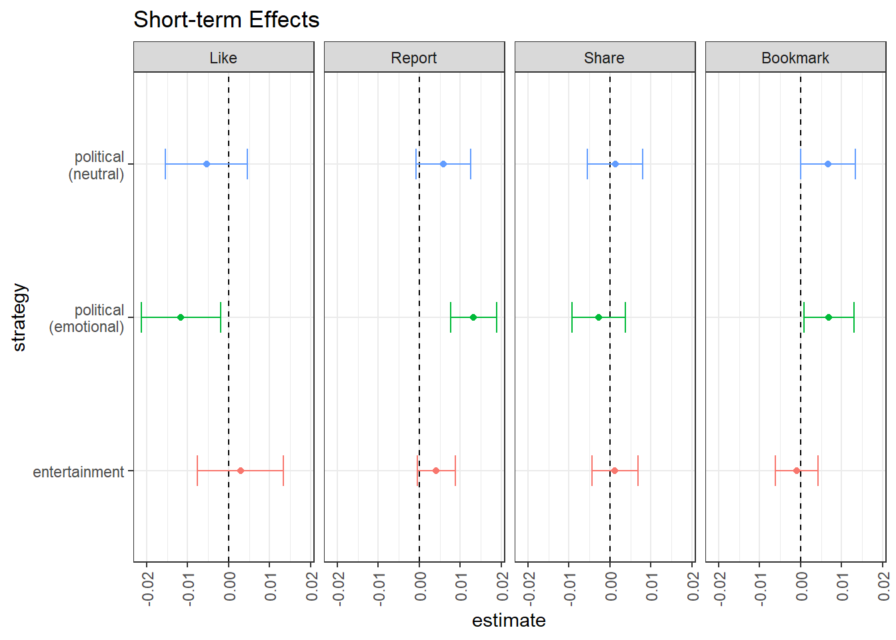
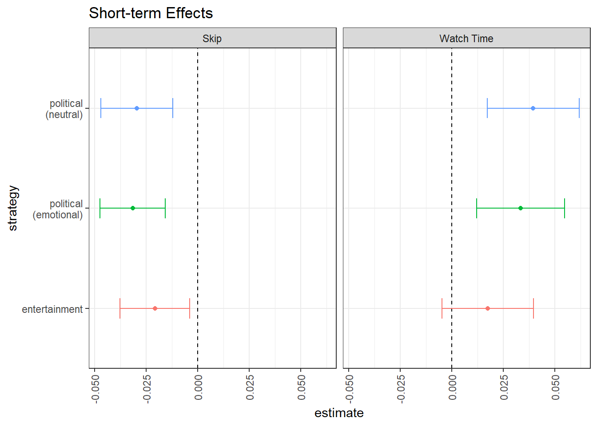
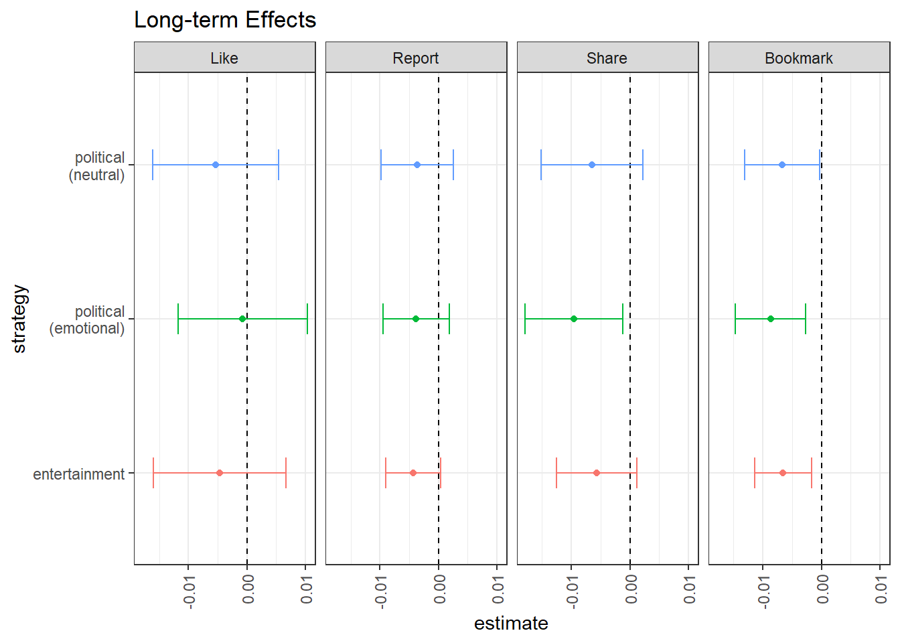
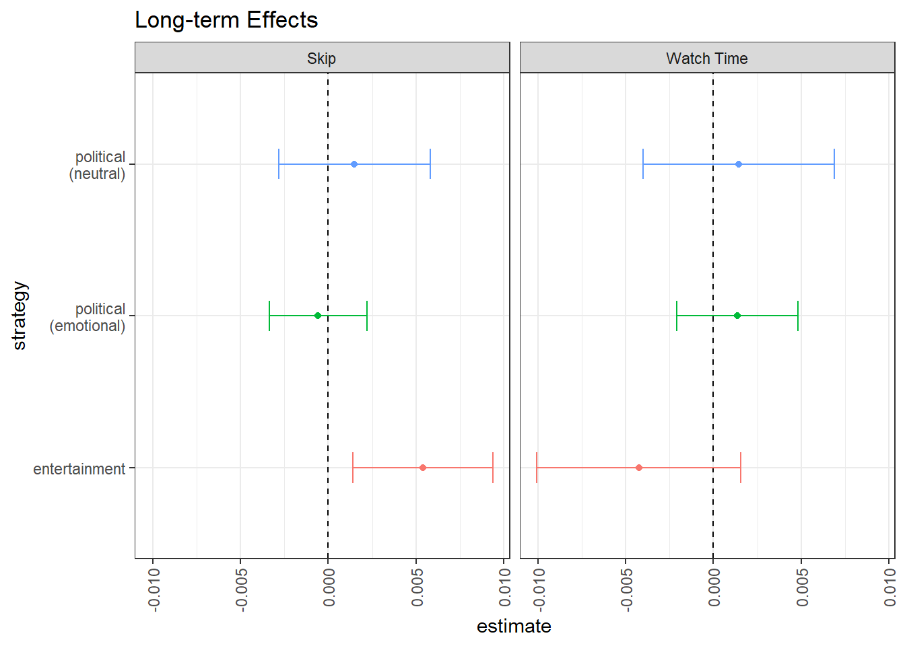
Article-figure dependencies
Estimation / write_fig for objects that # Figures of article reads from ests/. Placed here so a cold top-to-bottom render succeeds; appendix sections below redisplay the saved plots.
f_IIc3: by partisanship and party
This section estimates treatment effects by party and partisanship, with nested facet labels. Needed by Figure 1 (f_IIc3_shortterm).
for (D in c("wave_9", "wave_10")) {
df <- datasets[[D]]
for (OG in names(l_outcomegroups)) {
estimates <- lapply(l_outcomegroups[[OG]], function(Y)
lapply(strategies, function(S)
lapply(names(l_partisanship), function(PS)
lapply(names(party_codes), function(P) {
df_temp <- df |> filter(strategy_2 == S, partisan %in% l_partisanship[[PS]], party == P)
y <- df_temp[[v_outcomes[Y]]]
if (nrow(df_temp) == 0 || all(is.na(y)) || length(unique(na.omit(y))) < 2) {
print(paste("skipping ", paste(P, PS, S, Y, sep = "/"), "
(NO ESTIMATION POSSIBLE: constant/NA DV)"))
return(NULL)
}
run_feols_tidy(
df = df_temp,
outcome_var = v_outcomes[Y],
extra_cols = list(
outcome = Y,
strategy = S,
partisan = as.character(PS),
party = P
)
)
})
) |> bind_rows()) |> bind_rows()) |> bind_rows() |>
mutate(
outcome = factor(outcome, levels = unique(outcome)),
wave = D,
wave_label = wave_label_for(D),
outcome_group = OG,
figure_id = "f_IIc3"
)
plot <- estimates |>
gg_coefplot(aes(y = strategy, x = estimate, color = strategy)) +
facet_nested(
rows = vars(party, partisan),
cols = vars(outcome),
strip = strip_nested(
text_y = list(
element_text(angle = 90),
element_text(angle = 0, hjust = 0)
),
by_layer_y = TRUE
)
) +
labs(title = unique(estimates$wave_label)) +
theme(
panel.spacing.y = unit(0, "pt"),
strip.background.y = element_rect(fill = "grey90", color = "black"),
legend.position = "none",
axis.text = element_text(size = 6.5)
)
write_fig(
stem = fig_stem("f_IIc3", OG, D),
estimates = estimates,
plot = plot,
width = 7,
height = 11
)
}
}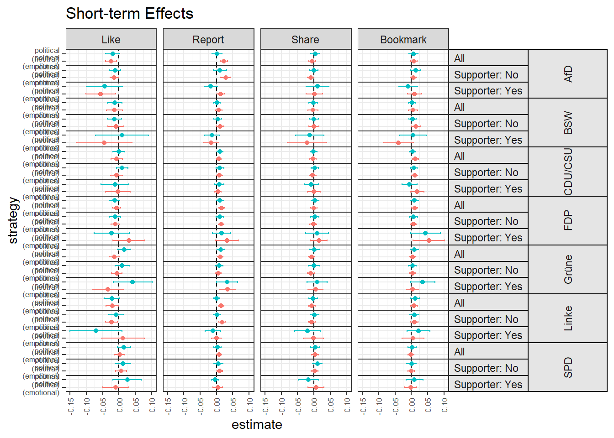
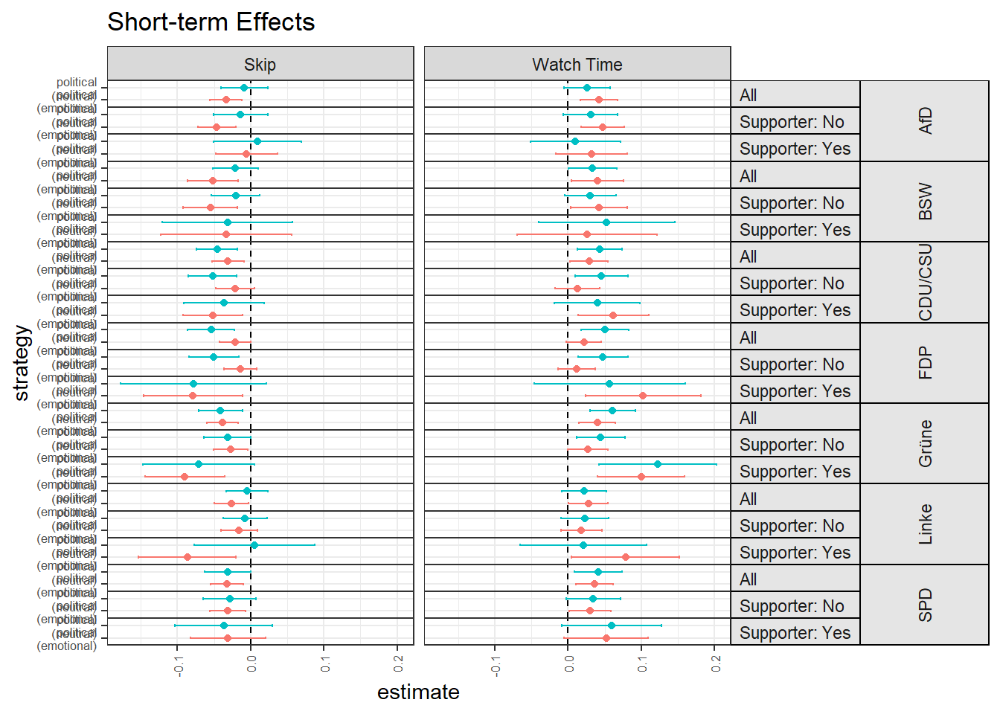

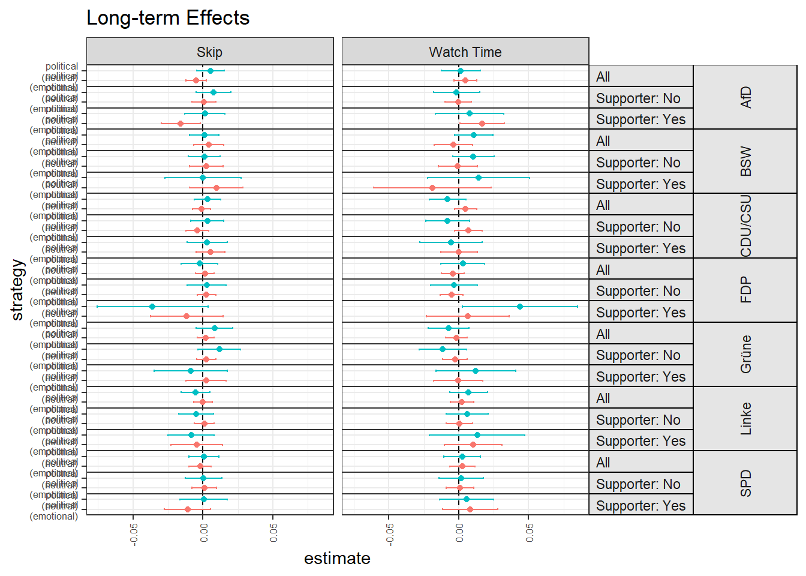
PTV effects by prior identification
Short- and long-term workshop effects on PTV by party, split by wave-9 identifiers. Saved stems feed ## Figure PTV (combined).
# Short-term PTV effects by party, split by wave 9 identifiers
ptv_short_by_id_raw <-
party_codes |>
lapply(function(party) {
pre_var <- paste0("ptv_w9_pre_", party)
post_var <- paste0("ptv_w9_post_", party)
id_var <- paste0("party_id_w9_", party)
fml <- paste0(post_var, " ~ workshop * ", pre_var) |>
as.formula()
# All respondents (conditional on continuous baseline PTV)
m_all <- lm_robust(fml, data = df_w9_w10)
# Among identifiers (party ID at wave 9 == 1)
m_id <- lm_robust(
fml,
data = df_w9_w10 |> dplyr::filter(!!rlang::sym(id_var) == 1)
)
# Among non-identifiers (party ID at wave 9 == 0)
m_non <- lm_robust(
fml,
data = df_w9_w10 |> dplyr::filter(!!rlang::sym(id_var) == 0)
)
dplyr::bind_rows(
tidy(m_all) |> dplyr::filter(term == "workshop") |>
dplyr::mutate(group = "All respondents"),
tidy(m_id) |> dplyr::filter(term == "workshop") |>
dplyr::mutate(group = "Identifiers"),
tidy(m_non) |> dplyr::filter(term == "workshop") |>
dplyr::mutate(group = "Non-identifiers")
) |>
dplyr::mutate(party = party_names[[party]])
}) |>
dplyr::bind_rows()
party_order_short <-
ptv_short_by_id_raw |>
dplyr::filter(group == "All respondents") |>
dplyr::arrange(estimate) |>
dplyr::pull(party)
ptv_short_by_id <-
ptv_short_by_id_raw |>
dplyr::mutate(
party = factor(party, levels = party_order_short),
group = factor(
group,
levels = c("All respondents", "Identifiers", "Non-identifiers")
)
)
fig_shortterm_ptv_by_id <-
ptv_short_by_id |>
ggplot(aes(x = estimate, y = party, color = group)) +
geom_vline(xintercept = 0, linetype = "dashed", alpha = 0.5) +
geom_point(position = position_dodge(width = 0.6), size = 2.5) +
geom_errorbarh(
aes(xmin = conf.low, xmax = conf.high),
position = position_dodge(width = 0.6),
height = 0.2
) +
geom_text(
aes(
label = sprintf("%.3f (p = %.3f)", estimate, p.value),
group = group
),
position = position_dodge(width = 0.6),
hjust = 0.5,
vjust = -0.7,
size = 2.5,
show.legend = FALSE
) +
labs(
x = "Effect of workshop on short-term PTV (wave 9, 0–1 scale)",
y = "Party",
color = NULL,
title = "Short-term PTV effects of digital literacy workshop",
subtitle = "Average effect, identifiers, and non-identifiers"
) +
theme_bw()Warning: `geom_errorbarh()` was deprecated in ggplot2 4.0.0.
ℹ Please use the `orientation` argument of `geom_errorbar()` instead.write_fig(
stem = "fig_shortterm_ptv_by_id",
estimates = ptv_short_by_id,
plot = fig_shortterm_ptv_by_id,
width = 7,
height = 9
)`height` was translated to `width`.
`height` was translated to `width`.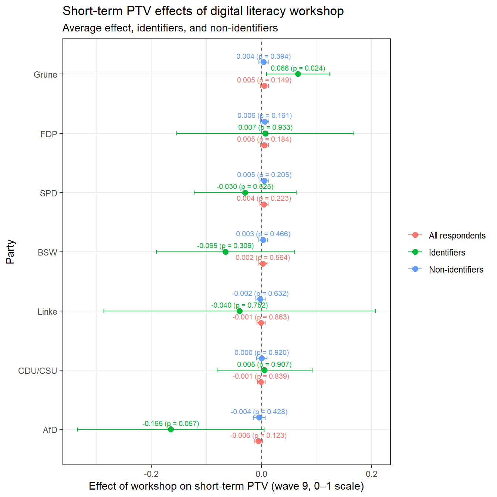
# Long-term PTV effects by party, split by wave 9 identifiers
ptv_long_by_id_raw <-
party_codes |>
lapply(function(party) {
pre_var <- paste0("ptv_w9_pre_", party)
post_var <- paste0("ptv_w10_", party)
id_var <- paste0("party_id_w9_", party)
fml <- paste0(post_var, " ~ workshop * ", pre_var) |>
as.formula()
# All respondents (conditional on continuous baseline PTV)
m_all <- lm_robust(fml, data = df_w9_w10)
# Among identifiers (party ID at wave 9 == 1)
m_id <- lm_robust(
fml,
data = df_w9_w10 |> dplyr::filter(!!rlang::sym(id_var) == 1)
)
# Among non-identifiers (party ID at wave 9 == 0)
m_non <- lm_robust(
fml,
data = df_w9_w10 |> dplyr::filter(!!rlang::sym(id_var) == 0)
)
dplyr::bind_rows(
tidy(m_all) |> dplyr::filter(term == "workshop") |>
dplyr::mutate(group = "All respondents"),
tidy(m_id) |> dplyr::filter(term == "workshop") |>
dplyr::mutate(group = "Identifiers"),
tidy(m_non) |> dplyr::filter(term == "workshop") |>
dplyr::mutate(group = "Non-identifiers")
) |>
dplyr::mutate(party = party_names[[party]])
}) |>
dplyr::bind_rows()
party_order_long <-
ptv_long_by_id_raw |>
dplyr::filter(group == "All respondents") |>
dplyr::arrange(estimate) |>
dplyr::pull(party)
ptv_long_by_id <-
ptv_long_by_id_raw |>
dplyr::mutate(
party = factor(party, levels = party_order_long),
group = factor(
group,
levels = c("All respondents", "Identifiers", "Non-identifiers")
)
)
fig_longterm_ptv_by_id <-
ptv_long_by_id |>
ggplot(aes(x = estimate, y = party, color = group)) +
geom_vline(xintercept = 0, linetype = "dashed", alpha = 0.5) +
geom_point(position = position_dodge(width = 0.6), size = 2.5) +
geom_errorbarh(
aes(xmin = conf.low, xmax = conf.high),
position = position_dodge(width = 0.6),
height = 0.2
) +
geom_text(
aes(
label = sprintf("%.3f (p = %.3f)", estimate, p.value),
group = group
),
position = position_dodge(width = 0.6),
hjust = 0.5,
vjust = -0.7,
size = 2.5,
show.legend = FALSE
) +
labs(
x = "Effect of workshop on long-term PTV (wave 10, 0–1 scale)",
y = "Party",
color = NULL,
title = "Long-term PTV effects of digital literacy workshop",
subtitle = "Average effect, identifiers, and non-identifiers"
) +
theme_bw()
write_fig(
stem = "fig_longterm_ptv_by_id",
estimates = ptv_long_by_id,
plot = fig_longterm_ptv_by_id,
width = 7,
height = 9
)`height` was translated to `width`.
`height` was translated to `width`.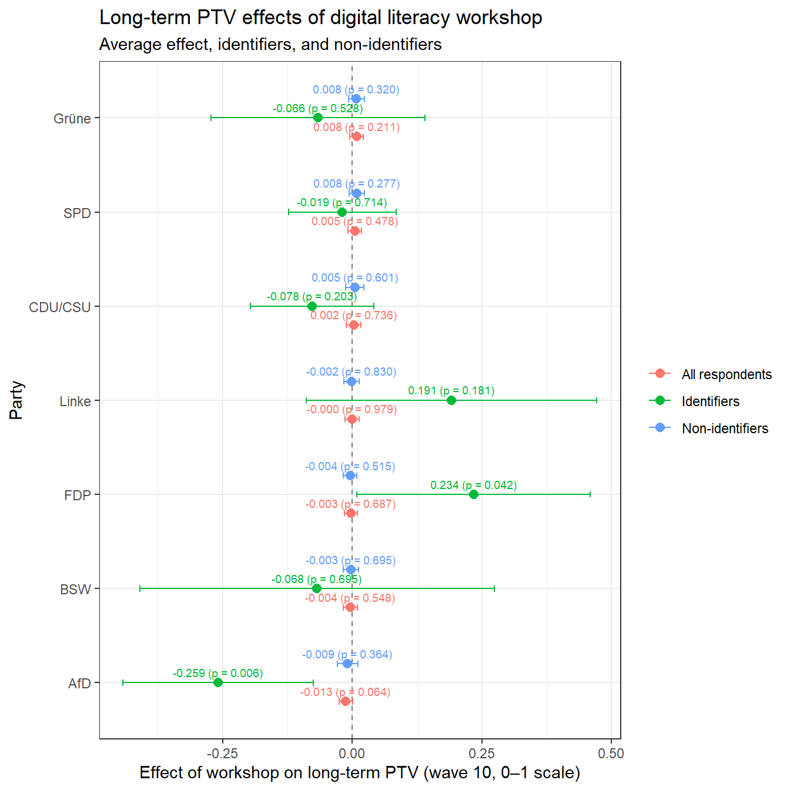
Figures of article
Figure 1
Combines pooled content-type effects (f_I_shortterm) as an All-parties row (including entertainment) with party × supporter effects (f_IIc3_shortterm). Supporters are shown only in party rows (color + dodge).
est_all <- read_rds(file.path(est_dir, "f_I_shortterm.rds")) |>
mutate(
party = "All parties",
partisan = NA_character_
)
# Legend / dodge order: All, Yes, No. Factor levels bottom→top on y-dodge,
# so reverse coding puts All visually on top; legend is reversed to match.
partisan_order <- c("All", "Supporter: Yes", "Supporter: No")
partisan_dodge_levels <- rev(partisan_order)
est_party <- read_rds(file.path(est_dir, "f_IIc3_shortterm.rds")) |>
mutate(
partisan = factor(partisan, levels = partisan_dodge_levels)
)
party_levels <- c("All parties", names(party_codes))
# Desired top→bottom on y: emotional, neutral, entertainment
strategy_order <- c(
"political\n(emotional)",
"political\n(neutral)",
"entertainment"
)
outcome_levels <- levels(est_all$outcome)
if (is.null(outcome_levels)) {
outcome_levels <- unique(as.character(est_all$outcome))
}
est_all <- est_all |>
mutate(
party = factor(party, levels = party_levels),
strategy = factor(strategy, levels = rev(strategy_order)),
outcome = factor(outcome, levels = outcome_levels)
)
est_party <- est_party |>
mutate(
party = factor(party, levels = party_levels),
strategy = factor(strategy, levels = rev(strategy_order)),
outcome = factor(outcome, levels = outcome_levels)
)
estimates_fig1 <- bind_rows(
est_all |> mutate(source = "f_I"),
est_party |> mutate(source = "f_IIc3")
)
# Symmetric clip at largest |point estimate| (CIs may be truncated)
x_half <- max(abs(estimates_fig1$estimate), na.rm = TRUE)
dodge <- position_dodge(width = 0.55)
fig1 <- ggplot() +
geom_vline(xintercept = 0, linetype = "dashed") +
# All-parties pooled row: no supporter split; includes entertainment
geom_errorbar(
data = est_all,
aes(xmin = conf.low, xmax = conf.high, y = strategy),
width = 0.2
) +
geom_point(
data = est_all,
aes(x = estimate, y = strategy),
size = 1.5
) +
# Party rows: supporter All / Yes / No
geom_errorbar(
data = est_party,
aes(xmin = conf.low, xmax = conf.high, y = strategy, color = partisan),
width = 0.2,
position = dodge
) +
geom_point(
data = est_party,
aes(x = estimate, y = strategy, color = partisan),
size = 1.5,
position = dodge
) +
facet_grid(
rows = vars(party),
cols = vars(outcome),
scales = "free_y",
space = "free_y"
) +
scale_y_discrete(drop = TRUE) +
scale_color_discrete(limits = partisan_order, breaks = partisan_order) +
coord_cartesian(xlim = c(-x_half, x_half)*0.92) +
labs(
x = "Average treatment effect",
y = NULL,
color = NULL,
title = "Short-term Effects"
) +
theme_bw(base_size = 10) +
theme(
legend.position = "bottom",
axis.text.x = element_text(angle = 0, vjust = 0.5, hjust = 0.5, size = 9),
axis.text.y = element_text(size = 9),
axis.title = element_text(size = 10),
strip.text.x = element_text(size = 10),
strip.text.y = element_text(angle = -90, size = 10),
legend.text = element_text(size = 9),
plot.title = element_text(size = 12),
panel.spacing.y = unit(3, "pt")
)
write_fig(
stem = "Figure1_combined",
estimates = estimates_fig1,
plot = fig1,
width = 12,
height = 9
)
Figure PTV (combined)
Single-panel faceted figure for the paper: short-term (wave 9) and long-term (wave 10) workshop effects on PTV by party and prior identification. Estimates reuse saved fig_*term_ptv_by_id objects (same models as the appendix PTV-by-id chunks).
ptv_short_est <- read_rds(file.path(est_dir, "fig_shortterm_ptv_by_id.rds"))
ptv_long_est <- read_rds(file.path(est_dir, "fig_longterm_ptv_by_id.rds"))
group_levels <- c("All respondents", "Identifiers", "Non-identifiers")
# Shared party order across facets: short-term All respondents (low → high)
party_order_ptv <-
ptv_short_est |>
filter(group == "All respondents") |>
arrange(estimate) |>
pull(party) |>
as.character()
estimates_ptv_combined <- bind_rows(
ptv_short_est |> mutate(horizon = "Short-term (wave 9)"),
ptv_long_est |> mutate(horizon = "Long-term (wave 10)")
) |>
mutate(
horizon = factor(
horizon,
levels = c("Short-term (wave 9)", "Long-term (wave 10)")
),
party = factor(as.character(party), levels = party_order_ptv),
group = factor(as.character(group), levels = group_levels)
)
dodge_ptv <- position_dodge(width = 0.6)
fig_ptv_combined <-
estimates_ptv_combined |>
ggplot(aes(x = estimate, y = party, color = group)) +
geom_vline(xintercept = 0, linetype = "dashed", alpha = 0.5) +
geom_point(position = dodge_ptv, size = 2.5) +
geom_errorbarh(
aes(xmin = conf.low, xmax = conf.high),
position = dodge_ptv,
height = 0.2
) +
geom_text(
aes(
label = sprintf("%.3f (p = %.3f)", estimate, p.value),
group = group
),
position = dodge_ptv,
hjust = 0.5,
vjust = -0.7,
size = 2.2,
show.legend = FALSE
) +
facet_grid(cols = vars(horizon)) +
labs(
x = "Effect of workshop on PTV (0–1 scale)",
y = "Party",
color = NULL,
title = "PTV effects of digital literacy workshop",
subtitle = "Average effect, identifiers, and non-identifiers"
) +
theme_bw(base_size = 11) +
theme(
legend.position = "bottom",
strip.background = element_rect(fill = "grey95", color = "grey80")
)
write_fig(
stem = "Figure_PTV_combined",
estimates = estimates_ptv_combined,
plot = fig_ptv_combined,
width = 10,
height = 8
)`height` was translated to `width`.
`height` was translated to `width`.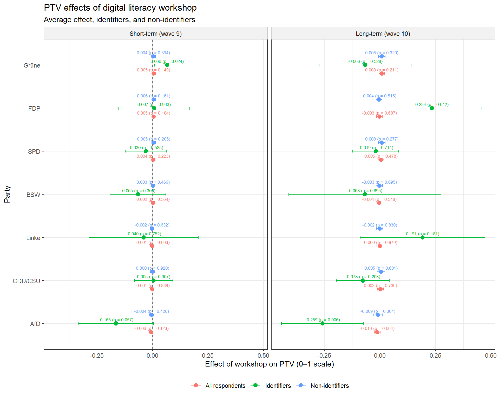
Comparing video types
Formal tests of whether short-term treatment effects on liking and reporting differ across video types. For each outcome and group we estimate
\[ Y = \beta_0 + \beta_1 \text{Treatment} + \beta_2 \text{Type} + \beta_3 (\text{Treatment} \times \text{Type}) + \varepsilon \]
on the two types being compared only (no video fixed effects, so all three slopes are identified). Type = 1 for emotionally manipulative political content and 0 for the comparison type. Standard errors are clustered by respondent. \(\beta_1\) is the ATE for the comparison type; \(\beta_3\) is the difference in ATEs (emotional minus comparison).
Groups: ALL (pooled) and each sending party. Short-term sample (wave_9) only. Outcomes: Like and Report. One regression table per outcome; columns are groups.
ensure_fig_dirs()
dir.create("tabs", showWarnings = FALSE)
compare_outcomes <- c("Like", "Report")
compare_group_names <- c("ALL", names(party_codes))
fit_type_contrast <- function(df, outcome_name, type_var) {
y <- v_outcomes[[outcome_name]]
fml <- as.formula(paste0(y, " ~ workshop_Treatment * ", type_var))
feols(fml, data = df, cluster = ~ID)
}
type_contrast_coef_map <- list(
"(Intercept)" = "Intercept",
"workshop_Treatment" = "Treatment (comparison type)",
"emotional" = "Emotional (vs comparison)",
"workshop_Treatment:emotional" = "Treatment × type"
)
write_type_contrast_table <- function(models, outcome_name, contrast_slug,
caption, label) {
stem <- paste0("tab_compare_", contrast_slug, "_", tolower(outcome_name))
write_rds(models, file.path(est_dir, paste0(stem, ".rds")))
texreg::texreg(
models,
file = file.path("tabs", paste0(stem, ".tex")),
digits = 3,
include.ci = FALSE,
custom.model.names = names(models),
custom.coef.map = type_contrast_coef_map,
caption = caption,
label = label,
stars = texreg_stars
)
texreg::htmlreg(
models,
digits = 3,
include.ci = FALSE,
custom.model.names = names(models),
custom.coef.map = type_contrast_coef_map,
caption = caption,
stars = texreg_stars
)
}Emotional vs politically neutral
Restricted to political videos coded emotional or neutral. For party columns, only videos from that party.
# Indicator: 1 = emotional political, 0 = neutral political
df_pol <- datasets$wave_9 |>
filter(strategy_2 %in% strategies) |>
mutate(emotional = as.integer(strategy_2 == strategies[1]))
models_emo_neu <- lapply(compare_outcomes, function(Y) {
fits <- c(
list(ALL = fit_type_contrast(df_pol, Y, "emotional")),
lapply(names(party_codes), function(P) {
fit_type_contrast(df_pol |> filter(party == P), Y, "emotional")
}) |> setNames(names(party_codes))
)
fits[compare_group_names]
}) |>
setNames(compare_outcomes)
write_rds(models_emo_neu, file.path(est_dir, "tab_compare_emotional_vs_neutral.rds"))
cat("\n### Like\n\n")Like
write_type_contrast_table(
models_emo_neu$Like,
"Like",
"emotional_vs_neutral",
caption = "Emotional vs politically neutral: Like (short-term). SEs clustered by respondent.",
label = "tab:compare_emotional_vs_neutral_like"
)The table was written to the file 'tabs/tab_compare_emotional_vs_neutral_like.tex'.| ALL | AfD | CDU/CSU | Linke | SPD | Grüne | FDP | BSW | |
|---|---|---|---|---|---|---|---|---|
| Intercept | 0.079*** | 0.090*** | 0.059*** | 0.110*** | 0.071*** | 0.071*** | 0.058*** | 0.096*** |
| (0.003) | (0.008) | (0.007) | (0.009) | (0.007) | (0.007) | (0.006) | (0.008) | |
| Treatment (comparison type) | -0.006 | -0.020* | -0.001 | -0.022* | 0.013 | 0.014 | -0.014 | -0.014 |
| (0.005) | (0.011) | (0.009) | (0.012) | (0.011) | (0.011) | (0.008) | (0.012) | |
| Emotional (vs comparison) | 0.023*** | 0.017** | 0.054*** | 0.021** | 0.030*** | 0.028*** | 0.005 | 0.002 |
| (0.003) | (0.009) | (0.008) | (0.010) | (0.008) | (0.008) | (0.007) | (0.011) | |
| Treatment × type | -0.006 | -0.006 | -0.006 | 0.002 | -0.010 | -0.029** | 0.007 | -0.000 |
| (0.005) | (0.011) | (0.011) | (0.013) | (0.012) | (0.012) | (0.009) | (0.016) | |
| Num. obs. | 72874 | 11968 | 11997 | 9694 | 11938 | 11257 | 10661 | 5359 |
| R2 (full model) | 0.001 | 0.002 | 0.006 | 0.002 | 0.001 | 0.001 | 0.001 | 0.001 |
| R2 (proj model) | ||||||||
| Adj. R2 (full model) | 0.001 | 0.002 | 0.006 | 0.002 | 0.001 | 0.001 | 0.000 | 0.000 |
| Adj. R2 (proj model) | ||||||||
| ***p < 0.01; **p < 0.05; *p < 0.1 | ||||||||
cat("\n### Report\n\n")Report
write_type_contrast_table(
models_emo_neu$Report,
"Report",
"emotional_vs_neutral",
caption = "Emotional vs politically neutral: Report (short-term). SEs clustered by respondent.",
label = "tab:compare_emotional_vs_neutral_report"
)The table was written to the file 'tabs/tab_compare_emotional_vs_neutral_report.tex'.| ALL | AfD | CDU/CSU | Linke | SPD | Grüne | FDP | BSW | |
|---|---|---|---|---|---|---|---|---|
| Intercept | 0.016*** | 0.035*** | 0.007*** | 0.015*** | 0.013*** | 0.011*** | 0.014*** | 0.014*** |
| (0.002) | (0.006) | (0.002) | (0.004) | (0.003) | (0.003) | (0.003) | (0.003) | |
| Treatment (comparison type) | 0.006* | 0.002 | 0.010** | 0.000 | 0.003 | 0.013** | 0.011** | 0.002 |
| (0.003) | (0.008) | (0.005) | (0.005) | (0.006) | (0.006) | (0.005) | (0.005) | |
| Emotional (vs comparison) | 0.002 | -0.001 | 0.006** | -0.001 | 0.004 | 0.006** | -0.003 | -0.005 |
| (0.001) | (0.006) | (0.003) | (0.004) | (0.003) | (0.003) | (0.003) | (0.004) | |
| Treatment × type | 0.007*** | 0.021** | -0.002 | 0.014*** | 0.006 | -0.002 | 0.006 | 0.006 |
| (0.002) | (0.009) | (0.005) | (0.005) | (0.006) | (0.006) | (0.006) | (0.007) | |
| Num. obs. | 72874 | 11968 | 11997 | 9694 | 11938 | 11257 | 10661 | 5359 |
| R2 (full model) | 0.002 | 0.003 | 0.002 | 0.002 | 0.001 | 0.002 | 0.003 | 0.001 |
| R2 (proj model) | ||||||||
| Adj. R2 (full model) | 0.002 | 0.002 | 0.001 | 0.002 | 0.001 | 0.002 | 0.003 | 0.000 |
| Adj. R2 (proj model) | ||||||||
| ***p < 0.01; **p < 0.05; *p < 0.1 | ||||||||
Emotional vs entertainment
Restricted to emotionally manipulative political videos and entertainment videos. For party columns, emotional videos from that party are compared to all entertainment videos.
df_ee <- datasets$wave_9 |>
filter(strategy_2 %in% c(strategies[1], "entertainment")) |>
mutate(emotional = as.integer(strategy_2 == strategies[1]))
models_emo_ent <- lapply(compare_outcomes, function(Y) {
fits <- c(
list(ALL = fit_type_contrast(df_ee, Y, "emotional")),
lapply(names(party_codes), function(P) {
df_p <- df_ee |> filter(party == P | strategy_2 == "entertainment")
fit_type_contrast(df_p, Y, "emotional")
}) |> setNames(names(party_codes))
)
fits[compare_group_names]
}) |>
setNames(compare_outcomes)
write_rds(models_emo_ent, file.path(est_dir, "tab_compare_emotional_vs_entertainment.rds"))
cat("\n### Like\n\n")Like
write_type_contrast_table(
models_emo_ent$Like,
"Like",
"emotional_vs_entertainment",
caption = "Emotional vs entertainment: Like (short-term). SEs clustered by respondent.",
label = "tab:compare_emotional_vs_entertainment_like"
)The table was written to the file 'tabs/tab_compare_emotional_vs_entertainment_like.tex'.| ALL | AfD | CDU/CSU | Linke | SPD | Grüne | FDP | BSW | |
|---|---|---|---|---|---|---|---|---|
| Intercept | 0.096*** | 0.096*** | 0.096*** | 0.096*** | 0.096*** | 0.096*** | 0.096*** | 0.096*** |
| (0.003) | (0.003) | (0.003) | (0.003) | (0.003) | (0.003) | (0.003) | (0.003) | |
| Treatment (comparison type) | 0.002 | 0.002 | 0.002 | 0.002 | 0.002 | 0.002 | 0.002 | 0.002 |
| (0.005) | (0.005) | (0.005) | (0.005) | (0.005) | (0.005) | (0.005) | (0.005) | |
| Emotional (vs comparison) | 0.006 | 0.011 | 0.017*** | 0.035*** | 0.005 | 0.002 | -0.033*** | 0.001 |
| (0.004) | (0.006) | (0.006) | (0.007) | (0.006) | (0.006) | (0.005) | (0.009) | |
| Treatment × type | -0.014** | -0.027*** | -0.009 | -0.022** | 0.000 | -0.017** | -0.009 | -0.016 |
| (0.005) | (0.009) | (0.009) | (0.010) | (0.008) | (0.008) | (0.007) | (0.013) | |
| Num. obs. | 112070 | 69076 | 69050 | 66772 | 69063 | 68452 | 67758 | 62379 |
| R2 (full model) | 0.000 | 0.000 | 0.000 | 0.001 | 0.000 | 0.000 | 0.002 | 0.000 |
| R2 (proj model) | ||||||||
| Adj. R2 (full model) | 0.000 | 0.000 | 0.000 | 0.001 | 0.000 | 0.000 | 0.002 | 0.000 |
| Adj. R2 (proj model) | ||||||||
| ***p < 0.01; **p < 0.05; *p < 0.1 | ||||||||
cat("\n### Report\n\n")Report
write_type_contrast_table(
models_emo_ent$Report,
"Report",
"emotional_vs_entertainment",
caption = "Emotional vs entertainment: Report (short-term). SEs clustered by respondent.",
label = "tab:compare_emotional_vs_entertainment_report"
)The table was written to the file 'tabs/tab_compare_emotional_vs_entertainment_report.tex'.| ALL | AfD | CDU/CSU | Linke | SPD | Grüne | FDP | BSW | |
|---|---|---|---|---|---|---|---|---|
| Intercept | 0.010*** | 0.010*** | 0.010*** | 0.010*** | 0.010*** | 0.010*** | 0.010*** | 0.010*** |
| (0.001) | (0.001) | (0.001) | (0.001) | (0.001) | (0.001) | (0.001) | (0.001) | |
| Treatment (comparison type) | 0.004* | 0.004* | 0.004* | 0.004* | 0.004* | 0.004* | 0.004* | 0.004* |
| (0.002) | (0.002) | (0.002) | (0.002) | (0.002) | (0.002) | (0.002) | (0.002) | |
| Emotional (vs comparison) | 0.007*** | 0.024*** | 0.003 | 0.003* | 0.007*** | 0.007*** | 0.001 | -0.001 |
| (0.001) | (0.003) | (0.002) | (0.002) | (0.002) | (0.002) | (0.002) | (0.003) | |
| Treatment × type | 0.009*** | 0.018*** | 0.004 | 0.010** | 0.005 | 0.007* | 0.012*** | 0.004 |
| (0.002) | (0.005) | (0.003) | (0.004) | (0.004) | (0.004) | (0.004) | (0.005) | |
| Num. obs. | 112070 | 69076 | 69050 | 66772 | 69063 | 68452 | 67758 | 62379 |
| R2 (full model) | 0.003 | 0.009 | 0.001 | 0.001 | 0.001 | 0.001 | 0.001 | 0.000 |
| R2 (proj model) | ||||||||
| Adj. R2 (full model) | 0.003 | 0.009 | 0.001 | 0.001 | 0.001 | 0.001 | 0.001 | 0.000 |
| Adj. R2 (proj model) | ||||||||
| ***p < 0.01; **p < 0.05; *p < 0.1 | ||||||||
Treatment effects by AfD video
Heterogeneity of short-term treatment effects by respondent AfD supporter status, with columns 2–3 stratified by whether the video’s sending party is AfD. Sample restriction: emotionally manipulative political videos only — strategy_2 == strategies[1] i.e. "political\n(emotional)" in wave_9 (not all political content; not entertainment). Same content type as the main emotional-political estimates. AfD supporter status is AFD = 1{party_preference_afd == 1} (respondent). AfD-video stratification uses afd_video = 1{party == "AfD"} (sending party).
In every column we estimate the same interaction
\[ Y = \beta_0 + \beta_1 \text{Treatment} + \beta_2 \text{AFD} + \beta_3 (\text{Treatment} \times \text{AFD}) + \varepsilon \]
with SEs clustered by respondent (no video FE). Columns: (1) all political-emotional videos; (2) AfD videos only; (3) non-AfD sender videos only. Outcomes: Like and Report. \(\beta_3\) is the difference in ATEs (AfD supporters minus non-supporters) within that sample. (treatment × afd_video is unidentified in columns 2–3 because afd_video is constant within those subsets.)
df_afd_het <- datasets$wave_9 |>
filter(strategy_2 == strategies[1]) |>
mutate(
AFD = as.integer(party_preference_afd == 1),
afd_video = as.integer(party == "AfD")
)
afd_hetero_coef_map <- list(
"(Intercept)" = "Intercept",
"workshop_Treatment" = "Treatment",
"AFD" = "AfD supporter",
"workshop_Treatment:AFD" = "Treatment × AfD supporter"
)
afd_hetero_model_names <- c(
"All (interaction)",
"AfD videos",
"Other senders"
)
fit_afd_hetero <- function(df, outcome_name) {
y <- v_outcomes[[outcome_name]]
fml <- as.formula(paste0(y, " ~ workshop_Treatment * AFD"))
list(
`All (interaction)` = feols(fml, data = df, cluster = ~ID),
`AfD videos` = feols(
fml,
data = df |> filter(afd_video == 1),
cluster = ~ID
),
`Other senders` = feols(
fml,
data = df |> filter(afd_video == 0),
cluster = ~ID
)
)
}
write_afd_hetero_table <- function(models, outcome_name, caption, label) {
stem <- paste0("tab_afd_video_hetero_", tolower(outcome_name))
write_rds(models, file.path(est_dir, paste0(stem, ".rds")))
texreg::texreg(
models,
file = file.path("tabs", paste0(stem, ".tex")),
digits = 3,
include.ci = FALSE,
custom.model.names = afd_hetero_model_names,
custom.coef.map = afd_hetero_coef_map,
caption = caption,
label = label,
stars = texreg_stars
)
texreg::htmlreg(
models,
digits = 3,
include.ci = FALSE,
custom.model.names = afd_hetero_model_names,
custom.coef.map = afd_hetero_coef_map,
caption = caption,
stars = texreg_stars
)
}
models_afd_het <- lapply(compare_outcomes, function(Y) {
fit_afd_hetero(df_afd_het, Y)
}) |>
setNames(compare_outcomes)
write_rds(models_afd_het, file.path(est_dir, "tab_afd_video_hetero.rds"))
cat("\n### Like\n\n")Like
write_afd_hetero_table(
models_afd_het$Like,
"Like",
caption = "Treatment × AfD supporter, stratified by AfD video: Like (emotional political videos, short-term). Cols: All / AfD videos / other senders. SEs clustered by respondent.",
label = "tab:afd_video_hetero_like"
)The table was written to the file 'tabs/tab_afd_video_hetero_like.tex'.| All (interaction) | AfD videos | Other senders | |
|---|---|---|---|
| Intercept | 0.099*** | 0.052*** | 0.109*** |
| (0.004) | (0.005) | (0.004) | |
| Treatment | -0.010* | -0.015** | -0.009 |
| (0.006) | (0.007) | (0.006) | |
| AfD supporter | 0.010 | 0.189*** | -0.028*** |
| (0.008) | (0.018) | (0.008) | |
| Treatment × AfD supporter | -0.007 | -0.046* | 0.001 |
| (0.011) | (0.024) | (0.011) | |
| Num. obs. | 51990 | 8996 | 42994 |
| R2 (full model) | 0.001 | 0.071 | 0.002 |
| R2 (proj model) | |||
| Adj. R2 (full model) | 0.000 | 0.071 | 0.002 |
| Adj. R2 (proj model) | |||
| ***p < 0.01; **p < 0.05; *p < 0.1 | |||
cat("\n### Report\n\n")Report
write_afd_hetero_table(
models_afd_het$Report,
"Report",
caption = "Treatment × AfD supporter, stratified by AfD video: Report (emotional political videos, short-term). Cols: All / AfD videos / other senders. SEs clustered by respondent.",
label = "tab:afd_video_hetero_report"
)The table was written to the file 'tabs/tab_afd_video_hetero_report.tex'.| All (interaction) | AfD videos | Other senders | |
|---|---|---|---|
| Intercept | 0.017*** | 0.043*** | 0.011*** |
| (0.001) | (0.004) | (0.001) | |
| Treatment | 0.018*** | 0.028*** | 0.016*** |
| (0.004) | (0.008) | (0.003) | |
| AfD supporter | 0.004 | -0.032*** | 0.012*** |
| (0.004) | (0.006) | (0.004) | |
| Treatment × AfD supporter | -0.015*** | -0.015 | -0.015** |
| (0.006) | (0.010) | (0.006) | |
| Num. obs. | 51990 | 8996 | 42994 |
| R2 (full model) | 0.002 | 0.011 | 0.003 |
| R2 (proj model) | |||
| Adj. R2 (full model) | 0.002 | 0.011 | 0.002 |
| Adj. R2 (proj model) | |||
| ***p < 0.01; **p < 0.05; *p < 0.1 | |||
Triple interaction (demeaned)
Same emotional-political sample (wave_9, strategy_2 == strategies[1]). We estimate the fully interacted model of demeaned treatment, demeaned AfD supporter status, and demeaned AfD-video (sender) status:
\[ Y = \beta_0 + \beta_1 \tilde{T} + \beta_2 \tilde{A} + \beta_3 \tilde{V} + \beta_4 (\tilde{T}\times\tilde{A}) + \beta_5 (\tilde{T}\times\tilde{V}) + \beta_6 (\tilde{A}\times\tilde{V}) + \beta_7 (\tilde{T}\times\tilde{A}\times\tilde{V}) + \varepsilon \]
where \(\tilde{T}\), \(\tilde{A}\), and \(\tilde{V}\) are workshop_Treatment, AFD (\(1\{\texttt{party\_preference\_afd}=1\}\)), and AFD\_videos (\(1\{\texttt{party}=\texttt{"AfD"}\}\)) each demeaned by their mean on this analysis sample. Demeaning is for interpretability: main effects and lower-order interactions are evaluated at sample means of the other factors. SEs clustered by respondent (no video FE), matching the stratified AfD-video hetero tables above. Columns: Like, Share, Bookmark, Report.
ensure_fig_dirs()
dir.create("tabs", showWarnings = FALSE)
df_afd_3way <- datasets$wave_9 |>
filter(strategy_2 == strategies[1]) |>
mutate(
AFD_supporter = as.integer(party_preference_afd == 1),
AFD_videos = as.integer(party == "AfD")
) |>
mutate(
treatment_demeaned = workshop_Treatment - mean(workshop_Treatment, na.rm = TRUE),
AFD_supporter_demeaned = AFD_supporter - mean(AFD_supporter, na.rm = TRUE),
AFD_videos_demeaned = AFD_videos - mean(AFD_videos, na.rm = TRUE)
)
afd_3way_outcomes <- c("Like", "Share", "Bookmark", "Report")
afd_3way_coef_map <- list(
"(Intercept)" = "Intercept",
"treatment_demeaned" = "Treatment (demeaned)",
"AFD_supporter_demeaned" = "AfD supporter (demeaned)",
"AFD_videos_demeaned" = "AfD video (demeaned)",
"treatment_demeaned:AFD_supporter_demeaned" = "Treatment × AfD supporter (demeaned)",
"treatment_demeaned:AFD_videos_demeaned" = "Treatment × AfD video (demeaned)",
"AFD_supporter_demeaned:AFD_videos_demeaned" = "AfD supporter × AfD video (demeaned)",
"treatment_demeaned:AFD_supporter_demeaned:AFD_videos_demeaned" =
"Treatment × AfD supporter × AfD video (demeaned)"
)
fit_afd_3way <- function(df, outcome_name) {
y <- v_outcomes[[outcome_name]]
feols(
as.formula(
paste0(
y,
" ~ treatment_demeaned * AFD_supporter_demeaned * AFD_videos_demeaned"
)
),
data = df,
cluster = ~ID
)
}
models_afd_3way <- lapply(afd_3way_outcomes, function(Y) {
fit_afd_3way(df_afd_3way, Y)
}) |>
setNames(afd_3way_outcomes)
write_rds(models_afd_3way, file.path(est_dir, "tab_afd_video_3way_demeaned.rds"))
texreg::texreg(
models_afd_3way,
file = file.path("tabs", "tab_afd_video_3way_demeaned.tex"),
digits = 3,
include.ci = FALSE,
custom.model.names = afd_3way_outcomes,
custom.coef.map = afd_3way_coef_map,
caption = "Treatment × AfD supporter × AfD video (all demeaned): Like/Share/Bookmark/Report (emotional political videos, short-term). SEs clustered by respondent.",
label = "tab:afd_video_3way_demeaned",
stars = texreg_stars
)The table was written to the file 'tabs/tab_afd_video_3way_demeaned.tex'.texreg::htmlreg(
models_afd_3way,
digits = 3,
include.ci = FALSE,
custom.model.names = afd_3way_outcomes,
custom.coef.map = afd_3way_coef_map,
caption = "Treatment × AfD supporter × AfD video (all demeaned): Like/Share/Bookmark/Report (emotional political videos, short-term). SEs clustered by respondent.",
stars = texreg_stars
)| Like | Share | Bookmark | Report | |
|---|---|---|---|---|
| Intercept | 0.096*** | 0.036*** | 0.028*** | 0.024*** |
| (0.002) | (0.002) | (0.002) | (0.001) | |
| Treatment (demeaned) | -0.012** | -0.003 | 0.007** | 0.013*** |
| (0.005) | (0.003) | (0.003) | (0.003) | |
| AfD supporter (demeaned) | 0.006 | 0.008** | 0.003 | -0.003 |
| (0.006) | (0.004) | (0.003) | (0.003) | |
| AfD video (demeaned) | -0.003 | 0.002 | 0.001 | 0.025*** |
| (0.004) | (0.002) | (0.002) | (0.003) | |
| Treatment × AfD supporter (demeaned) | -0.007 | 0.000 | 0.001 | -0.015*** |
| (0.011) | (0.008) | (0.007) | (0.006) | |
| Treatment × AfD video (demeaned) | -0.020** | -0.004 | 0.001 | 0.012** |
| (0.008) | (0.005) | (0.004) | (0.005) | |
| AfD supporter × AfD video (demeaned) | 0.195*** | 0.045*** | 0.027*** | -0.044*** |
| (0.011) | (0.006) | (0.005) | (0.005) | |
| Treatment × AfD supporter × AfD video (demeaned) | -0.046** | 0.013 | 0.001 | -0.000 |
| (0.022) | (0.013) | (0.011) | (0.009) | |
| Num. obs. | 51990 | 51990 | 51990 | 51990 |
| R2 (full model) | 0.014 | 0.002 | 0.001 | 0.009 |
| R2 (proj model) | ||||
| Adj. R2 (full model) | 0.014 | 0.002 | 0.001 | 0.009 |
| Adj. R2 (proj model) | ||||
| ***p < 0.01; **p < 0.05; *p < 0.1 | ||||
Overall treatment × partisan (pooled)
Pooled (not by sending party) short-term tests of whether treatment effects differ for co-partisan vs out-party viewers. Sample restriction: emotionally manipulative political videos only — strategy_2 == strategies[1] i.e. "political\n(emotional)" in wave_9 (not all political; not entertainment; same filter as the AfD video hetero tables). partisan = 1 if the respondent identifies with the video’s sending party (strong/weak preference), else 0; rows with missing partisan are dropped. Entertainment is excluded because partisan is undefined for non-party videos.
For each outcome we estimate
\[ Y = \beta_0 + \beta_1 \text{Treatment} + \beta_2 \text{Partisan} + \beta_3 (\text{Treatment} \times \text{Partisan}) + \varepsilon \]
with SEs clustered by respondent (no video FE, matching the other interaction tables in this appendix). Columns are outcomes: Like, Report, Share, Bookmark. \(\beta_1\) is the ATE for out-party viewers; \(\beta_3\) is the difference in ATEs (co-partisan minus out-party).
ensure_fig_dirs()
dir.create("tabs", showWarnings = FALSE)
df_partisan_het <- datasets$wave_9 |>
filter(strategy_2 == strategies[1], !is.na(partisan)) |>
mutate(partisan = as.integer(partisan))
partisan_outcomes <- c("Like", "Report", "Share", "Bookmark")
partisan_hetero_coef_map <- list(
"(Intercept)" = "Intercept",
"workshop_Treatment" = "Treatment",
"partisan" = "Partisan (co-partisan)",
"workshop_Treatment:partisan" = "Treatment × partisan"
)
fit_partisan_hetero <- function(df, outcome_name) {
y <- v_outcomes[[outcome_name]]
feols(
as.formula(paste0(y, " ~ workshop_Treatment * partisan")),
data = df,
cluster = ~ID
)
}
models_partisan_het <- lapply(partisan_outcomes, function(Y) {
fit_partisan_hetero(df_partisan_het, Y)
}) |>
setNames(partisan_outcomes)
write_rds(models_partisan_het, file.path(est_dir, "tab_treatment_x_partisan_pooled.rds"))
texreg::texreg(
models_partisan_het,
file = file.path("tabs", "tab_treatment_x_partisan_pooled.tex"),
digits = 3,
include.ci = FALSE,
custom.model.names = partisan_outcomes,
custom.coef.map = partisan_hetero_coef_map,
caption = "Overall treatment × partisan: Like/Report/Share/Bookmark (emotional political videos, short-term, pooled across parties). SEs clustered by respondent.",
label = "tab:treatment_x_partisan_pooled",
stars = texreg_stars
)The table was written to the file 'tabs/tab_treatment_x_partisan_pooled.tex'.texreg::htmlreg(
models_partisan_het,
digits = 3,
include.ci = FALSE,
custom.model.names = partisan_outcomes,
custom.coef.map = partisan_hetero_coef_map,
caption = "Overall treatment × partisan: Like/Report/Share/Bookmark (emotional political videos, short-term, pooled across parties). SEs clustered by respondent.",
stars = texreg_stars
)| Like | Report | Share | Bookmark | |
|---|---|---|---|---|
| Intercept | 0.080*** | 0.019*** | 0.033*** | 0.021*** |
| (0.003) | (0.002) | (0.002) | (0.002) | |
| Treatment | -0.009** | 0.014*** | -0.004 | 0.006** |
| (0.005) | (0.003) | (0.003) | (0.003) | |
| Partisan (co-partisan) | 0.096*** | -0.007*** | 0.018*** | 0.012*** |
| (0.009) | (0.003) | (0.004) | (0.003) | |
| Treatment × partisan | -0.009 | -0.003 | 0.008 | 0.004 |
| (0.012) | (0.004) | (0.006) | (0.006) | |
| Num. obs. | 51990 | 51990 | 51990 | 51990 |
| R2 (full model) | 0.017 | 0.002 | 0.003 | 0.002 |
| R2 (proj model) | ||||
| Adj. R2 (full model) | 0.017 | 0.002 | 0.003 | 0.002 |
| Adj. R2 (proj model) | ||||
| ***p < 0.01; **p < 0.05; *p < 0.1 | ||||
PAP H1a reconciliation: engagement index
PAP H1a: participants in the emotional workshop will engage (share, like, bookmark) less with emotional political posts than control. Here we construct a video-level engagement index
\[ \text{engage} = \frac{\text{share} + \text{like} + \text{bookmark}}{3} \]
and report simple short-term treatment effects (Y ~ Treatment | video, cluster by ID) on emotionally manipulative political videos only (strategy_2 == strategies[1] / "political\n(emotional)" in wave_9; same sample restriction as the AfD video hetero and pooled partisan tables). One table reports the three components (Like, Share, Bookmark) plus the engage index as a fourth column. Specification matches the main f_I ATE (video FE + respondent clustering) for all four outcomes. Coefficients keep conventional stars from unadjusted p-values; an extra row reports Benjamini–Hochberg FDR-adjusted p-values across the three component tests only (Engage blank/--- — not in that family).
ensure_fig_dirs()
dir.create("tabs", showWarnings = FALSE)
df_h1_emo <- datasets$wave_9 |>
filter(strategy_2 == strategies[1]) |>
mutate(
engage = rowMeans(
cbind(videoSharep1r, videoLikep1r, videoBookmarkp1r),
na.rm = FALSE
)
)
h1_ate_coef_map <- list(
"workshop_Treatment" = "Treatment"
)
fit_h1_ate <- function(df, outcome_var) {
feols(
as.formula(paste0(outcome_var, " ~ workshop_Treatment | video")),
data = df,
cluster = ~ID
)
}
h1_outcomes <- c(
"Like" = v_outcomes[["Like"]],
"Share" = v_outcomes[["Share"]],
"Bookmark" = v_outcomes[["Bookmark"]],
"Engage" = "engage"
)
models_h1_engage <- lapply(h1_outcomes, function(y) fit_h1_ate(df_h1_emo, y))
# BH FDR across the three PAP H1a components (not Engage)
h1_comp <- c("Like", "Share", "Bookmark")
p_h1_raw <- sapply(
models_h1_engage[h1_comp],
\(m) coeftable(m)["workshop_Treatment", "Pr(>|t|)"]
)
p_h1_bh <- p.adjust(p_h1_raw, method = "BH")
h1_bh_row <- c(sprintf("%.3f", p_h1_bh[h1_comp]), "---")
names(h1_bh_row) <- names(models_h1_engage)
write_rds(models_h1_engage, file.path(est_dir, "tab_pap_h1a_engage_emotional.rds"))
h1_caption <- paste(
"PAP H1a reconciliation: Like, Share, Bookmark, and engage = mean(share, like, bookmark)",
"on emotional political videos (short-term). Video FE; SEs clustered by respondent.",
"Row p (BH FDR): Benjamini--Hochberg FDR correction across the three component tests",
"(Like, Share, Bookmark); Engage is not in that family."
)
h1_gof_bh <- list("p (BH FDR)" = unname(h1_bh_row))
texreg::texreg(
models_h1_engage,
file = file.path("tabs", "tab_pap_h1a_engage_emotional.tex"),
digits = 3,
include.ci = FALSE,
custom.model.names = names(models_h1_engage),
custom.coef.map = h1_ate_coef_map,
custom.gof.rows = h1_gof_bh,
caption = h1_caption,
label = "tab:pap_h1a_engage_emotional",
stars = texreg_stars
)The table was written to the file 'tabs/tab_pap_h1a_engage_emotional.tex'.cat("\n### Engage index and components (emotional political)\n\n")Engage index and components (emotional political)
texreg::htmlreg(
models_h1_engage,
digits = 3,
include.ci = FALSE,
custom.model.names = names(models_h1_engage),
custom.coef.map = h1_ate_coef_map,
custom.gof.rows = h1_gof_bh,
caption = h1_caption,
stars = texreg_stars
)| Like | Share | Bookmark | Engage | |
|---|---|---|---|---|
| Treatment | -0.012** | -0.003 | 0.007** | -0.002 |
| (0.005) | (0.003) | (0.003) | (0.003) | |
| p (BH FDR) | 0.040 | 0.411 | 0.040 | — |
| Num. obs. | 51990 | 51990 | 51990 | 51990 |
| Num. groups: video | 156 | 156 | 156 | 156 |
| R2 (full model) | 0.021 | 0.005 | 0.004 | 0.017 |
| R2 (proj model) | 0.000 | 0.000 | 0.000 | 0.000 |
| Adj. R2 (full model) | 0.018 | 0.002 | 0.001 | 0.014 |
| Adj. R2 (proj model) | 0.000 | 0.000 | 0.000 | 0.000 |
| ***p < 0.01; **p < 0.05; *p < 0.1 | ||||
Exploratory: Causal-forest CATE correlations across outcomes
Exploratory appendix analysis (not a primary confirmatory claim). We estimate conditional average treatment effects (CATEs) separately for Like, Share, Bookmark, and Report using grf::causal_forest, then inspect how those CATEs co-vary across outcomes.
Fitting four causal forests is slow. The switch RUN_FORESTS in the configuration chunk controls whether forests are refit (TRUE) or whether the document reuses saved CATEs from ests/fig_causal_forest_cate_corr.rds (FALSE, default) and only rebuilds the correlation grid / figure. Set RUN_FORESTS <- TRUE once after a code or data change that affects the forests, then return it to FALSE for ordinary compiles.
Unit of analysis. Each observation is a person × sending-party cell (ID × party): on emotionally manipulative political videos (strategy_2 == strategies[1] / "political\n(emotional)", wave_9), outcomes are the mean of the binary engagement indicators over videos from that party shown to that respondent. A unique unit id pp_id identifies each person–party cell; all OOB \(\hat\tau\) predictions are at this level (not person–video). Treatment \(W\) is workshop_Treatment (constant within respondent). We try clusters = ID (person, higher than the unit) so multiple party-cells per person are not treated as independent; if grf rejects that, forests are fit without clustering rather than coarsening units.
Covariates \(X\). Respondent-level covariates from labels_en, merged from df_w9_w10 via ID / id_w9, plus full sending-party dummies for the cell’s party (same coding as party_codes / party names). Party must enter \(X\) so \(\hat\tau(X)\) can differ by sending party (including AfD vs non-AfD). Rows with missing \(Y\), \(W\), or \(X\) are dropped (listwise). Covariates with very high missingness on this sample (notably structurally missing tiktok_potential_* for current users, and berufliche_stellung) are omitted from \(X\) before listwise deletion so the forest sample is not restricted to non-users; omissions are reported in the chunk output when forests are fit.
Reading the 4×4. Off-diagonal panels scatter OOB CATE estimates for one outcome against another (each point = one person×party unit). Positive correlation means units with more positive estimated effects on one outcome also tend to have more positive effects on the other. Of particular interest: whether more negative Like CATEs co-occur with more positive Report CATEs. Diagonal panels show the marginal distribution of each outcome’s CATE. A numeric correlation matrix is saved alongside the figure.
set.seed(20260804)
# Display / estimation order: Like, Share, Bookmark, Report
cf_outcomes <- c("Like", "Share", "Bookmark", "Report")
cf_est_path <- file.path(est_dir, "fig_causal_forest_cate_corr.rds")
if (isTRUE(RUN_FORESTS)) {
# --- Person × sending-party means on emotional-political wave_9 -----------
df_cf_vid <- datasets$wave_9 |>
filter(strategy_2 == strategies[1])
rename_map <- setNames(unname(v_outcomes[cf_outcomes]), cf_outcomes)
party_order_cf_x <- names(party_codes)
df_cf_base <- df_cf_vid |>
transmute(
ID = as.character(ID),
party = party,
W = as.numeric(workshop_Treatment),
across(all_of(unname(v_outcomes[cf_outcomes])))
) |>
rename(!!!rename_map) |>
filter(party %in% party_order_cf_x) |>
group_by(ID, party) |>
summarise(
W = first(W),
across(all_of(cf_outcomes), \(z) mean(as.numeric(z), na.rm = TRUE)),
n_videos = n(),
.groups = "drop"
) |>
mutate(pp_id = paste(ID, party, sep = "__"))
# Sending-party dummies for X (required so τ̂(X) can differ by party / AfD)
for (p in party_order_cf_x) {
col <- paste0("video_party_", gsub("[^A-Za-z0-9]+", "_", p))
df_cf_base[[col]] <- as.integer(df_cf_base$party == p)
}
party_x_cols <- paste0("video_party_", gsub("[^A-Za-z0-9]+", "_", party_order_cf_x))
# --- Merge respondent covariates from labels_en / df_w9_w10 ---------------
x_candidates <- names(labels_en)
x_available <- intersect(x_candidates, names(df_w9_w10))
x_missing_from_data <- setdiff(x_candidates, names(df_w9_w10))
df_cf_covs <- df_w9_w10 |>
transmute(
ID = as.character(id_w9),
across(all_of(x_available), \(z) as.numeric(haven::zap_labels(z)))
)
df_cf <- df_cf_base |>
left_join(df_cf_covs, by = "ID")
# Drop high-missingness respondent covariates before listwise deletion
miss_rate_x <- sapply(x_available, \(v) mean(is.na(df_cf[[v]])))
x_high_miss <- names(miss_rate_x)[miss_rate_x > 0.25]
x_resp_use <- setdiff(x_available, x_high_miss)
x_use <- c(x_resp_use, party_x_cols)
n_before <- nrow(df_cf)
df_cf_cc <- df_cf |>
filter(W %in% c(0, 1)) |>
drop_na(all_of(c(cf_outcomes, "W", x_use)))
n_after <- nrow(df_cf_cc)
n_id_after <- n_distinct(df_cf_cc$ID)
cat(
"Causal-forest sample (exploratory; RUN_FORESTS = TRUE)\n",
" Unit: person × sending party (emotional political, wave_9)\n",
" ID×party cells before listwise: ", n_before, "\n",
" ID×party cells after listwise: ", n_after,
" (unique IDs: ", n_id_after, ")\n",
" labels_en covariates available: ", length(x_available),
" / ", length(x_candidates), "\n",
" Sending-party dummies in X: ", length(party_x_cols), "\n",
sep = ""
)
if (length(x_missing_from_data)) {
cat(" Not found in df_w9_w10: ", paste(x_missing_from_data, collapse = ", "), "\n", sep = "")
}
if (length(x_high_miss)) {
cat(
" Dropped from X (>25% missing on person×party sample):\n",
paste0(
" - ", x_high_miss, " (", sprintf("%.1f%%", 100 * miss_rate_x[x_high_miss]), ")",
collapse = "\n"
),
"\n",
sep = ""
)
}
cat(" X columns used (", length(x_use), "): ", paste(x_use, collapse = ", "), "\n", sep = "")
X_cf <- as.matrix(df_cf_cc[, x_use, drop = FALSE])
storage.mode(X_cf) <- "double"
W_cf <- as.numeric(df_cf_cc$W)
clusters_person <- as.numeric(factor(df_cf_cc$ID))
# Try person-level clustering (higher than unit); drop if grf rejects it
cf_clusters_used <- "ID"
clusters_arg <- clusters_person
# --- Four causal forests; OOB CATE predictions (fit one-at-a-time) --------
cate_mat <- matrix(NA_real_, nrow = nrow(df_cf_cc), ncol = length(cf_outcomes))
colnames(cate_mat) <- cf_outcomes
for (Y in cf_outcomes) {
cat("Fitting causal forest for ", Y, "...\n", sep = "")
y_vec <- as.numeric(df_cf_cc[[Y]])
fit <- tryCatch(
{
if (!is.null(clusters_arg)) {
grf::causal_forest(X = X_cf, Y = y_vec, W = W_cf, clusters = clusters_arg)
} else {
grf::causal_forest(X = X_cf, Y = y_vec, W = W_cf)
}
},
error = function(e) {
if (!is.null(clusters_arg)) {
cat(
" clusters = ID failed for ", Y, " (", conditionMessage(e),
"); dropping clustering for remaining forests.\n",
sep = ""
)
cf_clusters_used <<- "none"
clusters_arg <<- NULL
grf::causal_forest(X = X_cf, Y = y_vec, W = W_cf)
} else {
stop(e)
}
}
)
cate_mat[, Y] <- as.numeric(predict(fit)$predictions)
rm(fit)
}
if (identical(cf_clusters_used, "ID")) {
cat(" Clustering used: clusters = ID (person; multiple party-units per cluster).\n")
} else {
cat(" Clustering used: none (person-level clustering dropped).\n")
}
df_cate <- df_cf_cc |>
select(pp_id, ID, party, W) |>
bind_cols(as_tibble(cate_mat))
cate_cor <- cor(cate_mat, use = "pairwise.complete.obs")
# Within-ID Like CATE variation (sanity: party in X should yield non-zero range)
within_like <- df_cate |>
group_by(ID) |>
summarise(
n_parties = n(),
like_range = diff(range(Like, na.rm = TRUE)),
.groups = "drop"
)
pct_vary <- mean(within_like$like_range > 1e-12, na.rm = TRUE)
cat(
" Within-ID Like CATE: share of IDs with range > 0 = ",
sprintf("%.1f%%", 100 * pct_vary),
" (median range = ", sprintf("%.4f", median(within_like$like_range, na.rm = TRUE)),
")\n",
sep = ""
)
cf_estimates <- list(
cate_unit = df_cate,
cate_cor = cate_cor,
n_cells = n_after,
n_ids = n_id_after,
unit = "person-party",
clusters_used = cf_clusters_used,
x_used = x_use,
x_dropped_high_miss = x_high_miss,
miss_rate_x = miss_rate_x,
party_x_cols = party_x_cols,
within_id_like_pct_vary = pct_vary,
within_id_like_median_range = median(within_like$like_range, na.rm = TRUE)
)
# Persist CATEs (and metadata needed for plotting) before graphing
ensure_fig_dirs()
write_rds(cate_cor, file.path(est_dir, "causal_forest_cate_cor.rds"))
write_rds(cf_estimates, cf_est_path)
} else {
if (!file.exists(cf_est_path)) {
stop(
"Causal-forest estimates not found at '", cf_est_path, "'. ",
"Set RUN_FORESTS <- TRUE once in the configuration chunk to fit and save, ",
"then set RUN_FORESTS <- FALSE for ordinary compiles.",
call. = FALSE
)
}
cat(
"RUN_FORESTS = FALSE: loading saved CATEs from ", cf_est_path,
" (no forest refit).\n",
sep = ""
)
cf_estimates <- read_rds(cf_est_path)
needed <- c("cate_unit", "cate_cor")
missing_bits <- setdiff(needed, names(cf_estimates))
if (length(missing_bits)) {
stop(
"Saved causal-forest artifact is incomplete (missing: ",
paste(missing_bits, collapse = ", "),
"). Set RUN_FORESTS <- TRUE once to refit and save.",
call. = FALSE
)
}
df_cate <- cf_estimates$cate_unit
cate_cor <- cf_estimates$cate_cor
if (!all(cf_outcomes %in% names(df_cate))) {
stop(
"Saved cate_unit is missing outcome columns. ",
"Set RUN_FORESTS <- TRUE once to refit and save.",
call. = FALSE
)
}
if (!("party" %in% names(df_cate))) {
stop(
"Saved cate_unit is missing party (expected for person×party units). ",
"Set RUN_FORESTS <- TRUE once to refit and save.",
call. = FALSE
)
}
unit_loaded <- if (!is.null(cf_estimates$unit)) cf_estimates$unit else "unknown"
if (!identical(unit_loaded, "person-party")) {
stop(
"Saved artifact unit = '", unit_loaded, "' (expected person-party). ",
"Set RUN_FORESTS <- TRUE once to refit and save.",
call. = FALSE
)
}
cate_mat <- as.matrix(df_cate[, cf_outcomes, drop = FALSE])
n_cells_loaded <- if (!is.null(cf_estimates$n_cells)) cf_estimates$n_cells else nrow(df_cate)
n_ids_loaded <- if (!is.null(cf_estimates$n_ids)) {
cf_estimates$n_ids
} else {
dplyr::n_distinct(df_cate$ID)
}
cf_clusters_used <- if (!is.null(cf_estimates$clusters_used)) {
cf_estimates$clusters_used
} else {
"unknown"
}
cat(
" Loaded person×party units: ", n_cells_loaded,
" (unique IDs: ", n_ids_loaded, "; unit tag: ", unit_loaded,
"; clusters: ", cf_clusters_used, ")\n",
sep = ""
)
}RUN_FORESTS = FALSE: loading saved CATEs from ests/fig_causal_forest_cate_corr.rds (no forest refit).
Loaded person×party units: 17507 (unique IDs: 3658; unit tag: person-party; clusters: ID)if (!exists("cf_clusters_used")) {
cf_clusters_used <- if (!is.null(cf_estimates$clusters_used)) {
cf_estimates$clusters_used
} else {
"unknown"
}
}
cf_cluster_lab <- if (identical(cf_clusters_used, "ID")) {
"clusters = ID"
} else if (identical(cf_clusters_used, "none")) {
"no clustering"
} else {
paste0("clusters = ", cf_clusters_used)
}
cat("\nCATE correlation matrix (OOB):\n")
CATE correlation matrix (OOB):print(round(cate_cor, 3)) Like Share Bookmark Report
Like 1.000 -0.005 -0.070 0.132
Share -0.005 1.000 0.252 0.025
Bookmark -0.070 0.252 1.000 0.228
Report 0.132 0.025 0.228 1.000# --- 4×4 scatter / correlation grid ----------------------------------------
plot_list <- vector("list", length(cf_outcomes)^2)
k <- 1L
for (vx in cf_outcomes) {
for (vy in cf_outcomes) {
plot_list[[k]] <- tibble(
var_x = factor(vx, levels = cf_outcomes),
var_y = factor(vy, levels = cf_outcomes),
x = cate_mat[, vx],
y = cate_mat[, vy],
is_diag = vx == vy
)
k <- k + 1L
}
}
plot_cf_long <- bind_rows(plot_list)
# Shared CATE axis limits for all x panels and off-diagonal y panels.
# Diagonal histograms keep free count y-scales (see facetted_pos_scales below).
cate_lim <- c(-0.09, 0.06)
# Correlation annotations for off-diagonal panels
cor_labels <- as.data.frame(as.table(cate_cor)) |>
as_tibble() |>
rename(var_x = Var1, var_y = Var2, r = Freq) |>
filter(var_x != var_y) |>
mutate(
var_x = factor(var_x, levels = cf_outcomes),
var_y = factor(var_y, levels = cf_outcomes),
label = sprintf("r = %.2f", r),
x = cate_lim[1] + 0.05 * diff(cate_lim),
y = cate_lim[2] - 0.05 * diff(cate_lim)
)
# Per-panel y scales: fixed CATE limits off-diagonal; NULL = free counts on diagonal.
# Order matches facet_grid layout (row-major: var_y outer, var_x inner).
cf_y_scales <- lapply(cf_outcomes, function(vy) {
lapply(cf_outcomes, function(vx) {
if (identical(vx, vy)) {
NULL
} else {
scale_y_continuous(
limits = cate_lim,
expand = expansion(mult = 0.02)
)
}
})
}) |>
unlist(recursive = FALSE)
# Soft red zero guides: hline on all panels (CATE y = 0 off-diag; count = 0 on diag);
# vline on all panels (CATE x = 0, including diagonal histograms).
cf_zero_col <- "#f4a6a6"
fig_cf_cate_corr <- ggplot() +
geom_point(
data = plot_cf_long |> filter(!is_diag),
aes(x = x, y = y),
alpha = 0.12,
size = 0.55,
color = "grey25"
) +
geom_histogram(
data = plot_cf_long |> filter(is_diag),
aes(x = x),
bins = 40,
fill = "grey80",
color = "grey40",
linewidth = 0.2
) +
geom_hline(
data = plot_cf_long,
aes(yintercept = 0),
linewidth = 0.35,
linetype = "dashed",
color = cf_zero_col
) +
geom_vline(
data = plot_cf_long,
aes(xintercept = 0),
linewidth = 0.35,
linetype = "dashed",
color = cf_zero_col
) +
geom_text(
data = cor_labels,
aes(x = x, y = y, label = label),
hjust = 0,
vjust = 1,
size = 3.1
) +
# Shared x across all panels (CATE). independent="y" keeps diagonal histogram
# counts off the scatter y-axes; facetted_pos_scales then pins off-diagonal
# y to the same CATE limits as x.
facet_grid2(
rows = vars(var_y),
cols = vars(var_x),
scales = "free_y",
independent = "y"
) +
scale_x_continuous(
limits = cate_lim,
expand = expansion(mult = 0.02)
) +
facetted_pos_scales(y = cf_y_scales) +
labs(
title = "Exploratory: OOB CATE correlations across outcomes",
subtitle = paste0(
"Person×party units; emotional-political videos (wave_9); grf causal forests; ",
cf_cluster_lab
),
x = "CATE (column outcome)",
y = "CATE (row outcome)"
) +
theme_bw(base_size = 12) +
theme(
panel.grid.minor = element_blank(),
strip.background = element_rect(fill = "grey95", color = "grey80")
)
write_rds(cate_cor, file.path(est_dir, "causal_forest_cate_cor.rds"))
write_fig(
stem = "fig_causal_forest_cate_corr",
estimates = cf_estimates,
plot = fig_cf_cate_corr,
width = 9,
height = 9
)Warning: Removed 6 rows containing non-finite outside the scale range
(`stat_bin()`).Warning: Removed 18 rows containing missing values or values outside the scale range
(`geom_point()`).Warning: Removed 8 rows containing missing values or values outside the scale range
(`geom_bar()`).Warning: Removed 6 rows containing non-finite outside the scale range
(`stat_bin()`).Warning: Removed 18 rows containing missing values or values outside the scale range
(`geom_point()`).Warning: Removed 8 rows containing missing values or values outside the scale range
(`geom_bar()`).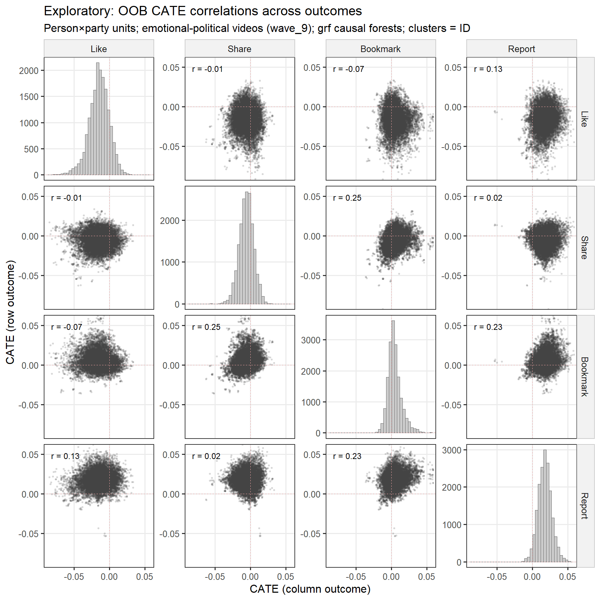
Like vs Bookmark CATEs by AfD vs not AfD (viewer × video). Same OOB forest CATEs as the 4×4 grid (Like and Bookmark columns of cate_unit). Exclusive wave-9 party ID (party_id_w9_* on df_w9_w10) and cell party (sending party) are each collapsed to binary AfD vs Not AfD. Facet order is AfD, Not AfD on both axes so the diagonal is same/same (AfD viewer + AfD sender; not-AfD viewer + not-AfD sender). Respondents with Other/None/missing party ID are dropped from this figure only. Reuses saved CATEs when RUN_FORESTS <- FALSE (no forest refit). Because units are person×party and sending party is in \(X\), CATEs can differ by party within the same respondent.
# Binary AfD vs Not AfD (order keeps same/same on the diagonal)
afd_facet_levels <- c("AfD", "Not AfD")
party_order_cf <- names(party_codes)
# Viewer party: exclusive wave-9 party ID, then collapse to AfD vs Not AfD
viewer_party_lookup <- {
stubs <- unname(party_codes[party_order_cf])
party_mat <- sapply(stubs, function(stub) {
as.integer(df_w9_w10[[paste0("party_id_w9_", stub)]] == 1)
})
viewer <- rep(NA_character_, nrow(df_w9_w10))
for (j in seq_along(stubs)) {
hit <- which(party_mat[, j] == 1L)
viewer[hit] <- party_order_cf[j]
}
tibble(
ID = as.character(df_w9_w10$id_w9),
party_viewer_full = viewer
) |>
distinct(ID, .keep_all = TRUE)
}
df_cate_lb <- df_cate |>
mutate(ID = as.character(ID)) |>
left_join(viewer_party_lookup, by = "ID") |>
filter(
!is.na(party_viewer_full),
party_viewer_full %in% party_order_cf,
party %in% party_order_cf
) |>
mutate(
party_viewer = factor(
ifelse(party_viewer_full == "AfD", "AfD", "Not AfD"),
levels = afd_facet_levels
),
party_video = factor(
ifelse(party == "AfD", "AfD", "Not AfD"),
levels = afd_facet_levels
)
)
cat(
"Like vs Bookmark CATE by AfD vs Not AfD (exploratory)\n",
" Person×party units with known viewer party: ", nrow(df_cate_lb),
" (unique IDs: ", dplyr::n_distinct(df_cate_lb$ID), ")\n",
" Facet rows = viewer AfD/Not AfD; cols = sender AfD/Not AfD; ",
"diagonal = same/same.\n",
sep = ""
)Like vs Bookmark CATE by AfD vs Not AfD (exploratory)
Person×party units with known viewer party: 13941 (unique IDs: 2950)
Facet rows = viewer AfD/Not AfD; cols = sender AfD/Not AfD; diagonal = same/same.fig_cf_like_bookmark_by_party <- ggplot(
df_cate_lb,
aes(x = Like, y = Bookmark)
) +
geom_hline(yintercept = 0, linewidth = 0.3, linetype = "dashed", color = "grey50") +
geom_vline(xintercept = 0, linewidth = 0.3, linetype = "dashed", color = "grey50") +
geom_point(alpha = 0.15, size = 0.7, color = "grey25") +
facet_grid(
rows = vars(party_viewer),
cols = vars(party_video),
labeller = labeller(
party_viewer = function(x) paste0("Viewer: ", x),
party_video = function(x) paste0("Video: ", x)
)
) +
labs(
title = "Exploratory: Like vs Bookmark OOB CATEs by AfD vs Not AfD",
subtitle = "Rows = viewer; cols = sender; diagonal = same/same. Emotional-political wave_9; person×party units",
x = "Like CATE",
y = "Bookmark CATE"
) +
theme_bw(base_size = 12) +
theme(
panel.grid.minor = element_blank(),
strip.background = element_rect(fill = "grey95", color = "grey80"),
strip.text = element_text(size = 10),
axis.text = element_text(size = 9)
)
write_fig(
stem = "fig_causal_forest_like_bookmark_by_party",
estimates = df_cate_lb,
plot = fig_cf_like_bookmark_by_party,
width = 7,
height = 7
)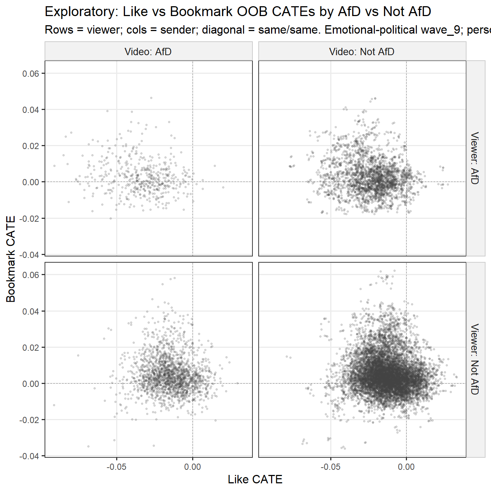
Other appendix items
A Descriptives
C Coding of TikTok videos
G Engagement with platform
H Further analysis
By strategy
This section estimates treatment effects by specific emotional strategies (anger, fear, superiority), per outcome.
- saved as f_IIb files
for (D in c("wave_9", "wave_10")) {
df <- datasets[[D]]
for (OG in names(l_outcomegroups)) {
estimates <- lapply(l_outcomegroups[[OG]], function(Y)
lapply(c("anger", "fear", "superiority"), function(S)
{
df_sub <- df |> filter(strategy == S)
run_feols_tidy(
df = df_sub,
outcome_var = v_outcomes[Y],
extra_cols = list(outcome = Y, strategy = S)
)
}
) |>
bind_rows()
) |>
bind_rows() |>
mutate(
outcome = factor(outcome, levels = unique(outcome)),
wave = D,
wave_label = wave_label_for(D),
outcome_group = OG,
figure_id = "f_IIb"
)
plot <- estimates |>
gg_coefplot(aes(y = strategy, x = estimate, color = strategy)) +
facet_grid(cols = vars(outcome)) +
labs(title = unique(estimates$wave_label))
write_fig(
stem = fig_stem("f_IIb", OG, D),
estimates = estimates,
plot = plot,
width = 7,
height = 3
)
}
}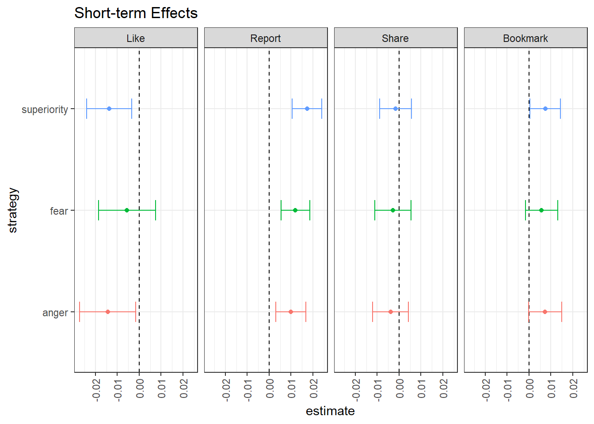
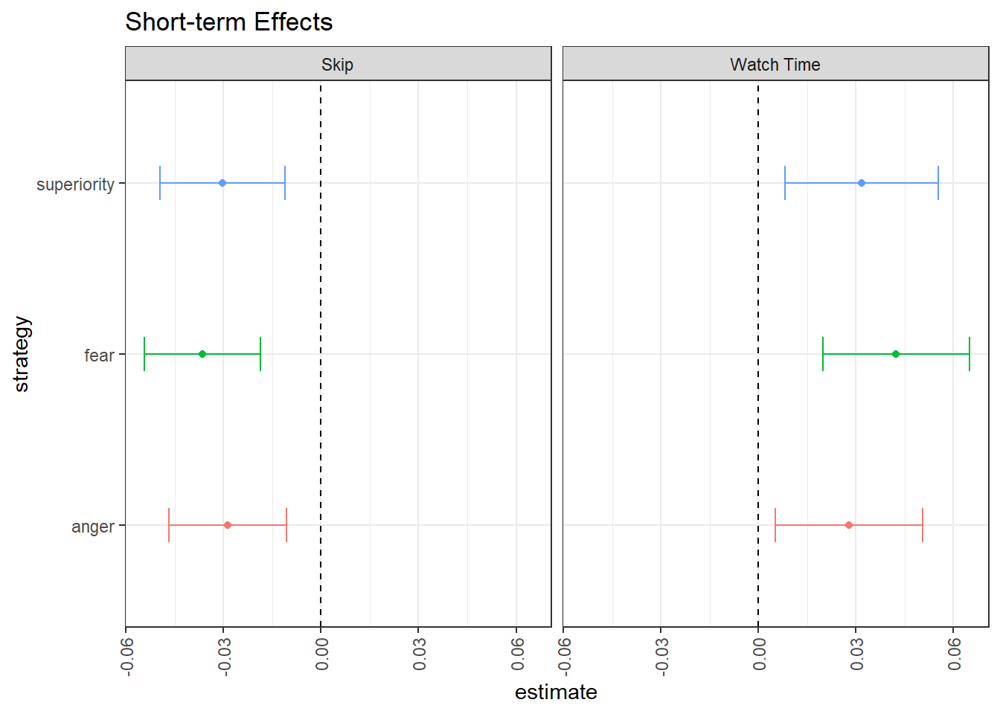
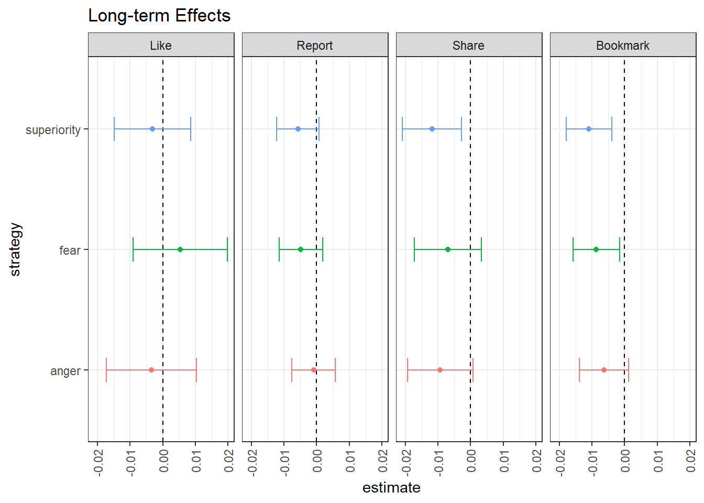
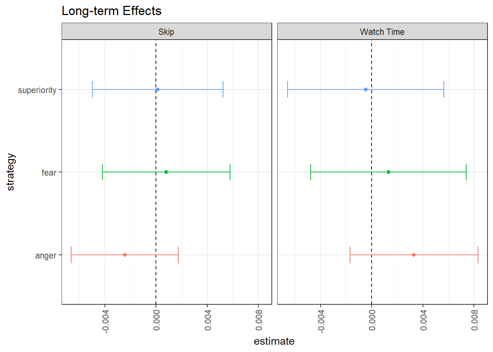
f_IIc3: by partisanship and party
Estimation and figures saved earlier under # Article-figure dependencies (needed by Figure 1). Redisplay:
for (D in c("wave_9", "wave_10")) {
for (OG in names(l_outcomegroups)) {
stem <- fig_stem("f_IIc3", OG, D)
print(read_rds(file.path(gg_dir, paste0(stem, ".rds"))))
}
}

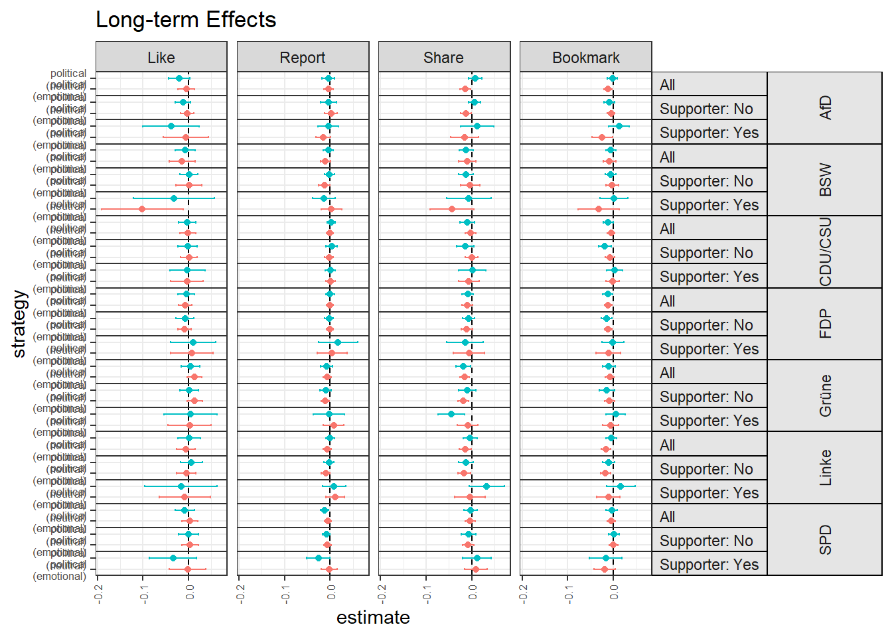

by partisanship and party (alternate)
suffix: f_IIc3b
This alternate visualization repeats f_IIc3 but shows only supporter yes/no levels.
for (D in c("wave_9", "wave_10")) {
df <- datasets[[D]]
for (OG in names(l_outcomegroups)) {
estimates <- lapply(l_outcomegroups[[OG]], function(Y)
lapply(strategies, function(S)
lapply(names(l_partisanship[1:2]), function(PS)
lapply(names(party_codes), function(P) {
df_temp <- df |> filter(strategy_2 == S, partisan %in% l_partisanship[[PS]], party == P)
y <- df_temp[[v_outcomes[Y]]]
if (nrow(df_temp) == 0 || all(is.na(y)) || length(unique(na.omit(y))) < 2) {
print(paste("skipping ", paste(P, PS, S, Y, sep = "/"), " (NO ESTIMATION POSSIBLE: constant/NA DV)"))
return(NULL)
}
run_feols_tidy(
df = df_temp,
outcome_var = v_outcomes[Y],
extra_cols = list(
outcome = Y,
strategy = S,
partisan = as.character(PS),
party = P
)
)
})
) |> bind_rows()) |> bind_rows()) |> bind_rows() |>
mutate(
outcome = factor(outcome, levels = unique(outcome)),
wave = D,
wave_label = wave_label_for(D),
outcome_group = OG,
figure_id = "f_IIc3b"
)
plot <- estimates |>
gg_coefplot(aes(y = strategy, x = estimate, color = strategy)) +
facet_nested(
rows = vars(party, partisan),
cols = vars(outcome),
strip = strip_nested(
text_y = list(
element_text(angle = 90),
element_text(angle = 0, hjust = 0)
),
by_layer_y = TRUE
)
) +
labs(title = unique(estimates$wave_label)) +
theme(
panel.spacing.y = unit(0, "pt"),
strip.background.y = element_rect(fill = "grey90", color = "black"),
legend.position = "none"
)
write_fig(
stem = fig_stem("f_IIc3b", OG, D),
estimates = estimates,
plot = plot,
width = 7,
height = 8
)
}
}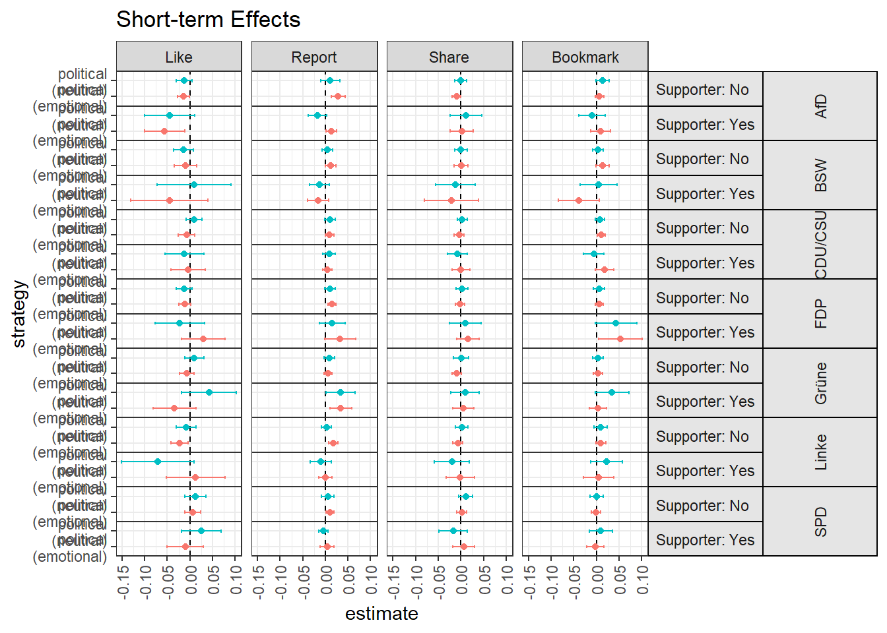
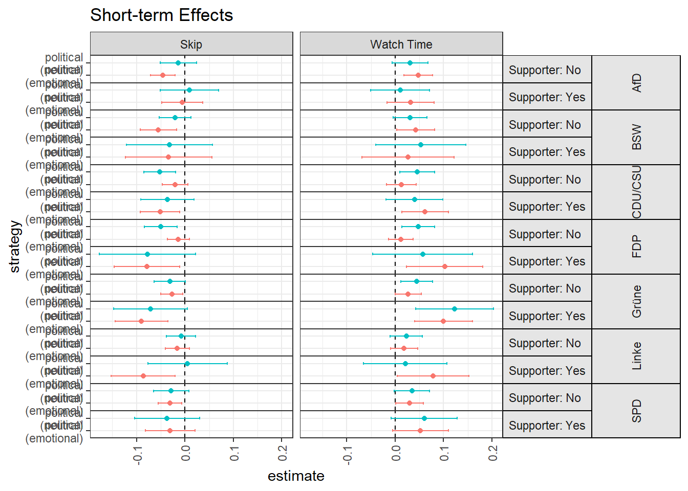
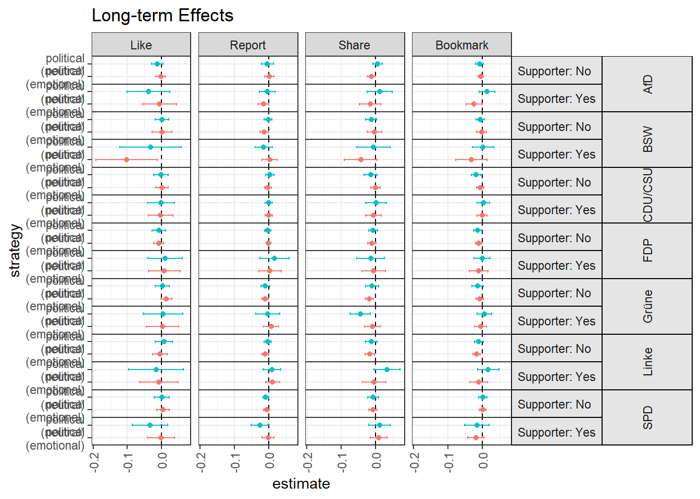
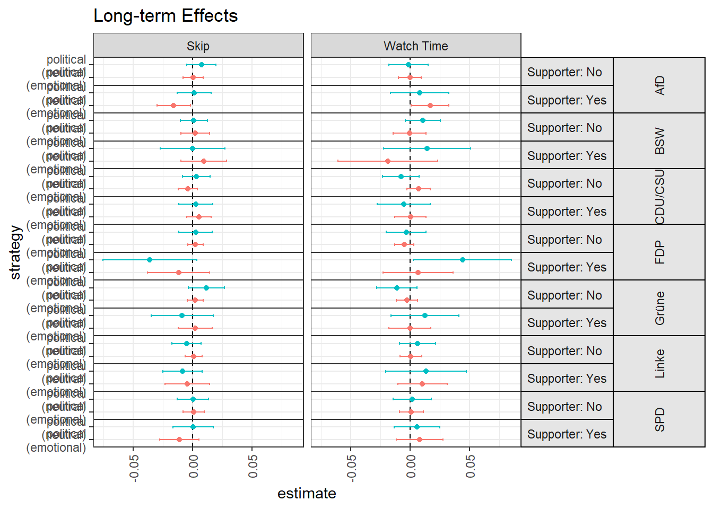
Appendix I: Attrition analysis
covs <- names(labels_en)
names(covs) <- labels_en
## model
get_interaction <- function(v) {
paste0("attrit ~ workshop * ", v) |>
as.formula() |>
lm_robust(data = df_w9_w10 |>
mutate(across(all_of(v), scale))) |>
tidy() |>
filter(grepl(":", term))
}
results <- covs |> lapply(get_interaction) |> bind_rows(.id = "label")
## plot
fig_attrit_interaction <-
results |>
ggplot(aes(x = estimate, y = forcats::fct_reorder(label, estimate))) +
geom_vline(xintercept = 0, linetype = "dashed") +
geom_errorbarh(aes(xmin = conf.low, xmax = conf.high), height = 0) +
geom_point() +
labs(
title = "Treatment × Covariate Interactions on Attrition (LPM)",
subtitle = "Points: interaction of treated with covariate; bars: 95% CI",
x = "Interaction estimate (Δ probability of attrition)",
y = NULL
) +
theme_bw()
write_fig(
stem = "fig_attrit_interaction",
estimates = results,
plot = fig_attrit_interaction
)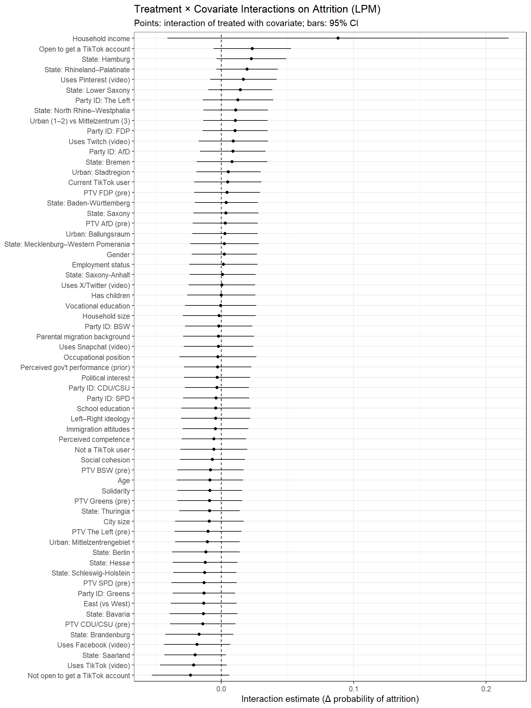
Appendix J: Downstream effects on AfD support
Manual verification of afd voting results:
df_w9_w10 <- df_w9_w10 |>
mutate(ptv_w9_pre_afd_demeaned = ptv_w9_pre_afd - mean(ptv_w9_pre_afd, na.rm = TRUE),
party_id_w9_afd_demeaned = party_id_w9_afd - mean(party_id_w9_afd,
na.rm = TRUE))
by_hand <-
list(
identification = lm_robust(party_id_w10_afd ~ workshop*party_id_w9_afd_demeaned,
data = df_w9_w10),
conditional_afd = lm_robust(party_id_w10_afd ~ workshop,
data = df_w9_w10 |> filter(party_id_w9_afd == 1)),
conditional_non_afd = lm_robust(party_id_w10_afd ~ workshop,
data = df_w9_w10 |> filter(party_id_w9_afd == 0))
)
# Ensure tabs directory exists and export LaTeX table
texreg::texreg(
by_hand,
file = "tabs/tab_afd_maintained_support.tex",
digits = 3,
include.ci = FALSE,
custom.model.names = c(
"All respondents",
"AfD identifiers",
"Non-AfD respondents"
),
custom.coef.map = list(
"(Intercept)" = "Intercept",
"workshop" = "Treatment (workshop)",
"party_id_w9_afd_demeaned" = "AfD ID (wave 9, demeaned)",
"workshop:party_id_w9_afd_demeaned" = "Treatment × AfD ID (demeaned)"
),
caption = "Effect of digital literacy workshop on AfD identification (wave 10).",
label = "tab:afd_maintained_support"
)The table was written to the file 'tabs/tab_afd_maintained_support.tex'.# Keep HTML version for quick inspection in the rendered document
by_hand |> texreg::htmlreg(digits = 3, include.ci = FALSE)| identification | conditional_afd | conditional_non_afd | |
|---|---|---|---|
| (Intercept) | 0.187*** | 0.911*** | 0.043*** |
| (0.005) | (0.016) | (0.005) | |
| workshop | -0.018* | -0.059* | -0.010 |
| (0.007) | (0.026) | (0.007) | |
| party_id_w9_afd_demeaned | 0.868*** | ||
| (0.017) | |||
| workshop:party_id_w9_afd_demeaned | -0.049 | ||
| (0.027) | |||
| R2 | 0.672 | 0.008 | 0.001 |
| Adj. R2 | 0.672 | 0.007 | 0.000 |
| Num. obs. | 3634 | 602 | 3032 |
| RMSE | 0.219 | 0.322 | 0.193 |
| ***p < 0.001; **p < 0.01; *p < 0.05 | |||
Additional analysis: conditional effects for all parties
# For each party, estimate:
# (a) average effect (interaction model with demeaned ID)
# (b) effect among identifiers
# (c) effect among non-identifiers
maintained_results_raw <-
party_codes |>
lapply(function(party) {
w9 <- paste0("party_id_w9_", party)
w10 <- paste0("party_id_w10_", party)
df_tmp <- df_w9_w10 |>
dplyr::mutate(
id_w9 = !!rlang::sym(w9),
id_w9_demeaned = id_w9 - mean(id_w9, na.rm = TRUE),
id_w10 = !!rlang::sym(w10)
)
# (a) Average effect (interaction model with demeaned ID)
m_all <- lm_robust(id_w10 ~ workshop * id_w9_demeaned, data = df_tmp)
# (b) Effect among identifiers
m_id <- lm_robust(id_w10 ~ workshop,
data = df_tmp |> dplyr::filter(id_w9 == 1))
# (c) Effect among non-identifiers
m_non <- lm_robust(id_w10 ~ workshop,
data = df_tmp |> dplyr::filter(id_w9 == 0))
dplyr::bind_rows(
tidy(m_all) |> dplyr::filter(term == "workshop") |>
dplyr::mutate(group = "All respondents"),
tidy(m_id) |> dplyr::filter(term == "workshop") |>
dplyr::mutate(group = "Identifiers"),
tidy(m_non) |> dplyr::filter(term == "workshop") |>
dplyr::mutate(group = "Non-identifiers")
) |>
dplyr::mutate(party = party_names[[party]])
}) |>
dplyr::bind_rows()
party_order_maintained <-
maintained_results_raw |>
dplyr::filter(group == "All respondents") |>
dplyr::arrange(estimate) |>
dplyr::pull(party)
maintained_results <-
maintained_results_raw |>
dplyr::mutate(
party = factor(party, levels = party_order_maintained),
group = factor(
group,
levels = c("All respondents", "Identifiers", "Non-identifiers")
)
)
fig_maintained_all_parties <-
maintained_results |>
ggplot(aes(x = estimate, y = party, color = group)) +
geom_vline(xintercept = 0, linetype = "dashed", alpha = 0.5) +
geom_point(position = position_dodge(width = 0.6), size = 2.5) +
geom_errorbarh(
aes(xmin = conf.low, xmax = conf.high),
position = position_dodge(width = 0.6),
height = 0.2
) +
geom_text(
aes(
label = sprintf("%.3f (p = %.3f)", estimate, p.value),
group = group
),
position = position_dodge(width = 0.6),
hjust = 0.5,
vjust = -0.7,
size = 2.5,
show.legend = FALSE
) +
labs(
x = "Effect of workshop on party identification (wave 10)",
y = "Party",
color = NULL,
title = "Effects of digital literacy workshop on party identification",
subtitle = "Average effect, identifiers, and non-identifiers"
) +
theme_bw()
write_fig(
stem = "fig_maintained_support_all_parties",
estimates = maintained_results,
plot = fig_maintained_all_parties,
width = 7,
height = 9
)`height` was translated to `width`.
`height` was translated to `width`.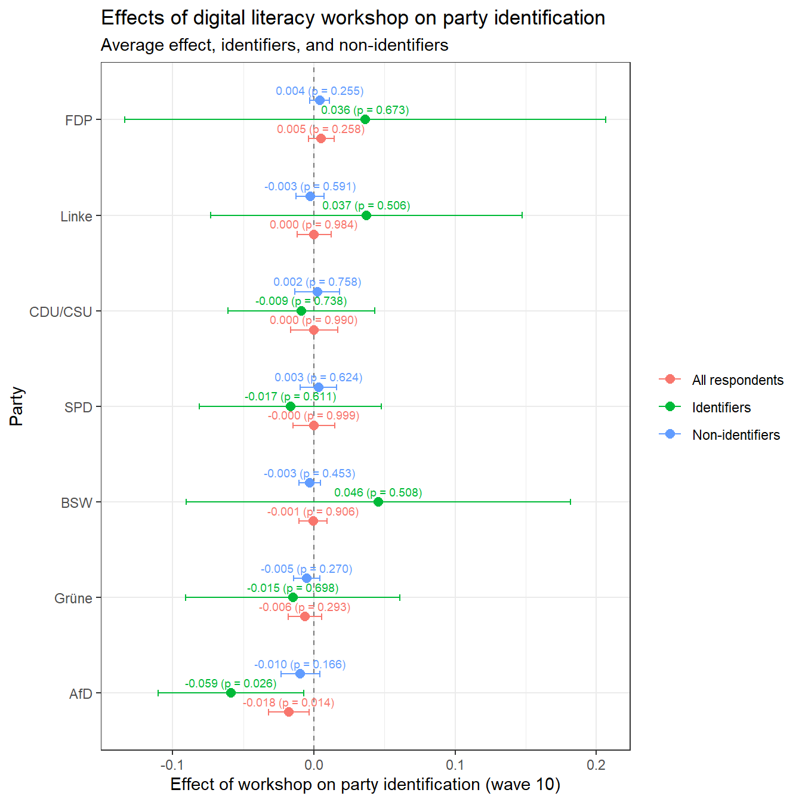
# Calculate mean party support by treatment group for arrow plot
arrow_data <- df_w9_w10 |>
group_by(workshop) |>
summarize(
party_id_w9_afd = mean(party_id_w9_afd, na.rm = TRUE),
party_id_w10_afd = mean(party_id_w10_afd, na.rm = TRUE),
party_id_w9_cdu = mean(party_id_w9_cdu, na.rm = TRUE),
party_id_w10_cdu = mean(party_id_w10_cdu, na.rm = TRUE),
party_id_w9_linke = mean(party_id_w9_linke, na.rm = TRUE),
party_id_w10_linke = mean(party_id_w10_linke, na.rm = TRUE),
party_id_w9_spd = mean(party_id_w9_spd, na.rm = TRUE),
party_id_w10_spd = mean(party_id_w10_spd, na.rm = TRUE),
party_id_w9_gruene = mean(party_id_w9_gruene, na.rm = TRUE),
party_id_w10_gruene = mean(party_id_w10_gruene, na.rm = TRUE),
party_id_w9_fdp = mean(party_id_w9_fdp, na.rm = TRUE),
party_id_w10_fdp = mean(party_id_w10_fdp, na.rm = TRUE),
party_id_w9_bsw = mean(party_id_w9_bsw, na.rm = TRUE),
party_id_w10_bsw = mean(party_id_w10_bsw, na.rm = TRUE)
) |>
mutate(treatment = ifelse(workshop == 1, "Treatment", "Control"))
# Reshape to long format for plotting
arrow_long <- arrow_data |>
pivot_longer(
cols = starts_with("party_id_w"),
names_to = c("wave", "party"),
names_pattern = "party_id_(w\\d+)_(.*)",
values_to = "support"
) |>
pivot_wider(names_from = wave, values_from = support) |>
mutate(party = case_when(
party == "afd" ~ "AfD",
party == "cdu" ~ "CDU/CSU",
party == "linke" ~ "Linke",
party == "spd" ~ "SPD",
party == "gruene" ~ "Grüne",
party == "fdp" ~ "FDP",
party == "bsw" ~ "BSW"
))
# Create arrow plot
arrow_segments <- arrow_long |>
select(treatment, party, w9, w10) |>
tidyr::pivot_wider(
names_from = treatment,
values_from = c(w9, w10),
names_glue = "{.value}_{treatment}"
) |>
filter(!is.na(w9_Control) & !is.na(w9_Treatment))
p_arrows <- ggplot(arrow_long, aes(x = w9, y = w10)) +
geom_point(aes(color = treatment), size = 3, alpha = 0.7) +
geom_segment(
data = arrow_segments,
aes(x = w9_Control, y = w10_Control,
xend = w9_Treatment, yend = w10_Treatment),
arrow = arrow(length = unit(0.2, "cm")),
color = "black", size = 1
) +
geom_text_repel(
aes(label = ifelse(treatment == "Control", party, "")),
size = 3, force = 2, color = "black"
) +
geom_abline(slope = 1, intercept = 0, linetype = "dashed", alpha = 0.5) +
labs(
x = "Party Support in Wave 9",
y = "Party Support in Wave 10",
title = "Changes in Party Support: Control vs Treatment",
subtitle = "Arrows show movement from Control to Treatment group means"
) +
scale_color_manual(values = c("Control" = "#F8766D", "Treatment" = "#00BFC4")) +
theme_bw() +
theme(legend.title = element_blank())Warning: Using `size` aesthetic for lines was deprecated in ggplot2 3.4.0.
ℹ Please use `linewidth` instead.write_fig(
stem = "party_support_arrows",
estimates = list(arrow_long = arrow_long, arrow_segments = arrow_segments),
plot = p_arrows
)Saving 7 x 5 in image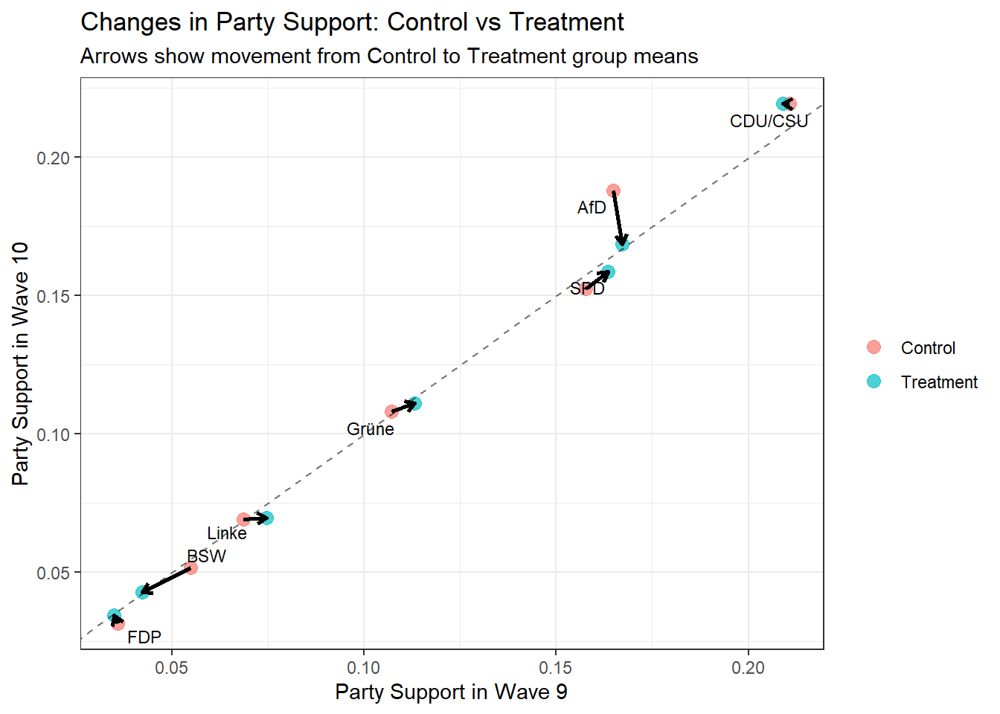
# this model is ANOVA style; w10 conditioning on w9
# not using a change score
over_time_models <-
party_codes |>
lapply(function(party) {
paste0("party_id_w10_", party, " ~ workshop * party_id_w9_", party, "_demean") |>
as.formula() |>
lm_robust(data = df_w9_w10) |>
tidy()
}) |>
bind_rows(.id = "party") |>
filter(term == "workshop")
# Create plot with confidence intervals
plot_change <- function(
results = over_time_models,
subtitle = "Effect of treatment on long term support, conditional on initial support") {
results |>
ggplot(aes(x = reorder(party, estimate), y = estimate)) +
geom_col(aes(fill = ifelse(estimate > 0, "Positive", "Negative")),
alpha = 0.7, width = 0.6) +
geom_errorbar(aes(ymin = conf.low, ymax = conf.high),
width = 0.2, color = "black", size = 0.8) +
geom_hline(yintercept = 0, linetype = "dashed", alpha = 0.5) +
geom_text(aes(label = sprintf("%.3f\n(p=%.3f)", estimate, p.value)),
size = 2.8) +
scale_fill_manual(values = c("Positive" = "#2E8B57", "Negative" = "#DC143C")) +
labs(
x = "Party",
y = "Change in support (outcome on 0 to 1 scale)",
title = "Treatment Effects (with 95% CI)",
subtitle = subtitle,
caption = "Error bars show 95% confidence intervals."
) +
theme_bw() +
theme(
legend.title = element_blank(),
plot.subtitle = element_text(size = 9),
plot.caption = element_text(size = 8)
) +
coord_flip()
}
changew9w10 <- plot_change(
results = over_time_models,
subtitle = "Effect of treatment on long term support, conditional on initial support")
write_fig(
stem = "party_support_did_ci",
estimates = over_time_models,
plot = changew9w10
)Saving 7 x 5 in image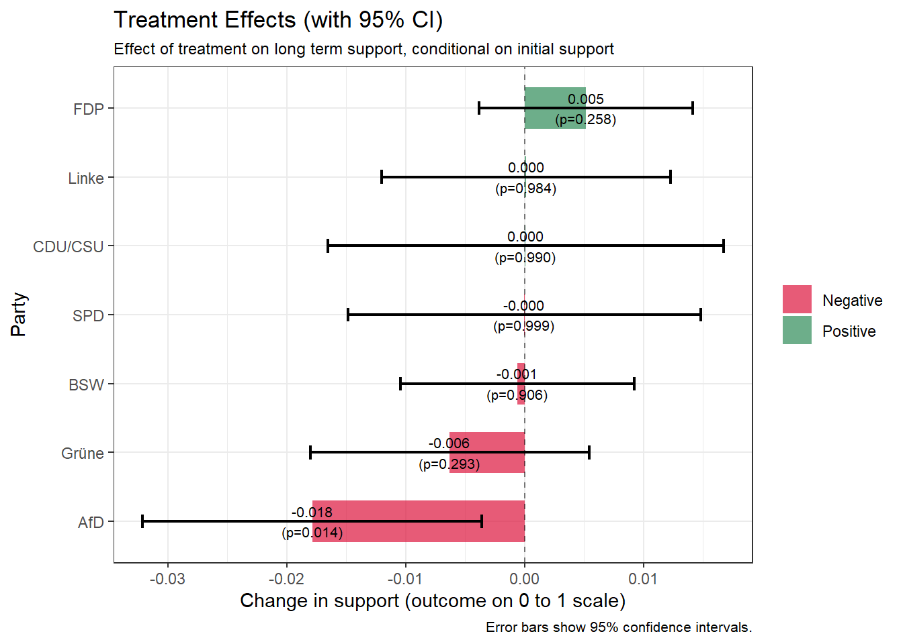
short term PTV change
# fit PTV_Posterior (wave 9) on treatment and pre-treatment PTV (wave 9)
short_models <-
party_codes |>
lapply(function(party) {
pre_var <- paste0("ptv_w9_pre_", party)
post_var <- paste0("ptv_w9_post_", party)
fml <- paste0(post_var, " ~ workshop * ", pre_var) |>
as.formula()
lm_robust(fml, data = df_w9_w10) |>
tidy()
}) |>
bind_rows(.id = "party") |>
dplyr::filter(term == "workshop")
# Create plot with confidence intervals
ptv_short <-
plot_change(
results = short_models,
subtitle = "Effect of treatment on short term support, conditional on initial support")
write_fig(
stem = "party_support_ptv_shortterm",
estimates = short_models,
plot = ptv_short
)Saving 7 x 5 in image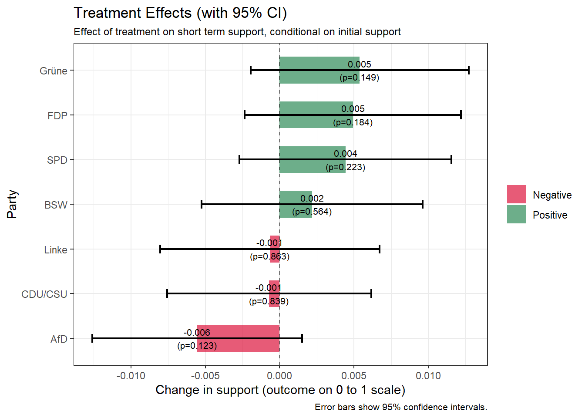
# Estimates/plot saved earlier under Article-figure dependencies
print(read_rds(file.path(gg_dir, "fig_shortterm_ptv_by_id.rds")))`height` was translated to `width`.
long term PTV change
long_models <-
party_codes |>
lapply(function(party) {
pre_var <- paste0("ptv_w9_pre_", party)
post_var <- paste0("ptv_w10_", party)
fml <- paste0(
post_var, " ~ workshop * ", pre_var) |>
as.formula()
lm_robust(fml, data = df_w9_w10) |>
tidy()
}) |>
bind_rows(.id = "party") |>
dplyr::filter(term == "workshop")
# Create plot with confidence intervals
ptv_long <-
plot_change(
results = long_models,
subtitle = "Effect of treatment on long term PTV, conditional on initial support")
write_fig(
stem = "party_support_ptv_longterm",
estimates = long_models,
plot = ptv_long
)Saving 7 x 5 in image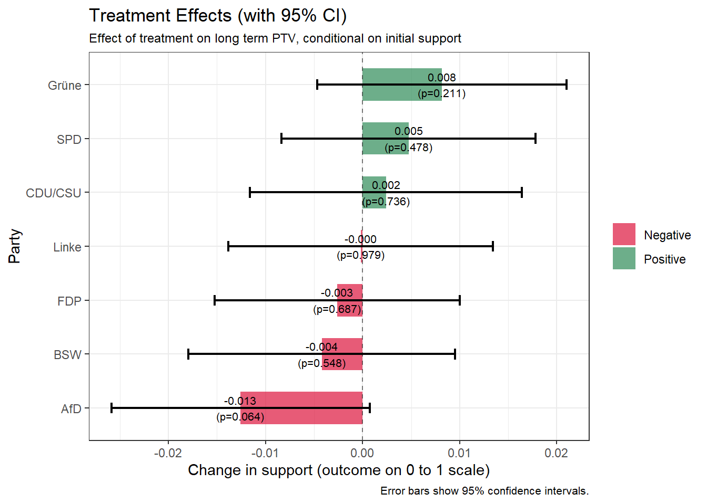
# Estimates/plot saved earlier under Article-figure dependencies
print(read_rds(file.path(gg_dir, "fig_longterm_ptv_by_id.rds")))`height` was translated to `width`.
Appendix K: Changes in Party Identification
options(scipen = 999) # discourage scientific notation
pid_overall <- build_pid_lodes(df_w9_w10)
fig_pid_change <- plot_pid_alluvial(
lodes = pid_overall$lodes,
party_cols = pid_overall$party_cols,
title_text = "Party identification transitions: Wave 9 \u2192 Wave 10"
)
write_fig(
stem = "fig_pid_change",
estimates = pid_overall,
plot = fig_pid_change
)Saving 7 x 5 in imageWarning in setup_data(...): Some differentiation aesthetics vary within alluvia, and will be diffused by their first value.
Consider using `geom_flow()` instead.
Warning in setup_data(...): Some differentiation aesthetics vary within alluvia, and will be diffused by their first value.
Consider using `geom_flow()` instead.
within treatment
pid_treat <- build_pid_lodes(df_w9_w10 |> filter(workshop == 1))
fig_pid_change_treat <- plot_pid_alluvial(
lodes = pid_treat$lodes,
party_cols = pid_treat$party_cols,
title_text = "Party identification transitions: Wave 9 \u2192 Wave 10"
)
write_fig(
stem = "fig_pid_change_treat",
estimates = pid_treat,
plot = fig_pid_change_treat
)Saving 7 x 5 in imageWarning in setup_data(...): Some differentiation aesthetics vary within alluvia, and will be diffused by their first value.
Consider using `geom_flow()` instead.
Warning in setup_data(...): Some differentiation aesthetics vary within alluvia, and will be diffused by their first value.
Consider using `geom_flow()` instead.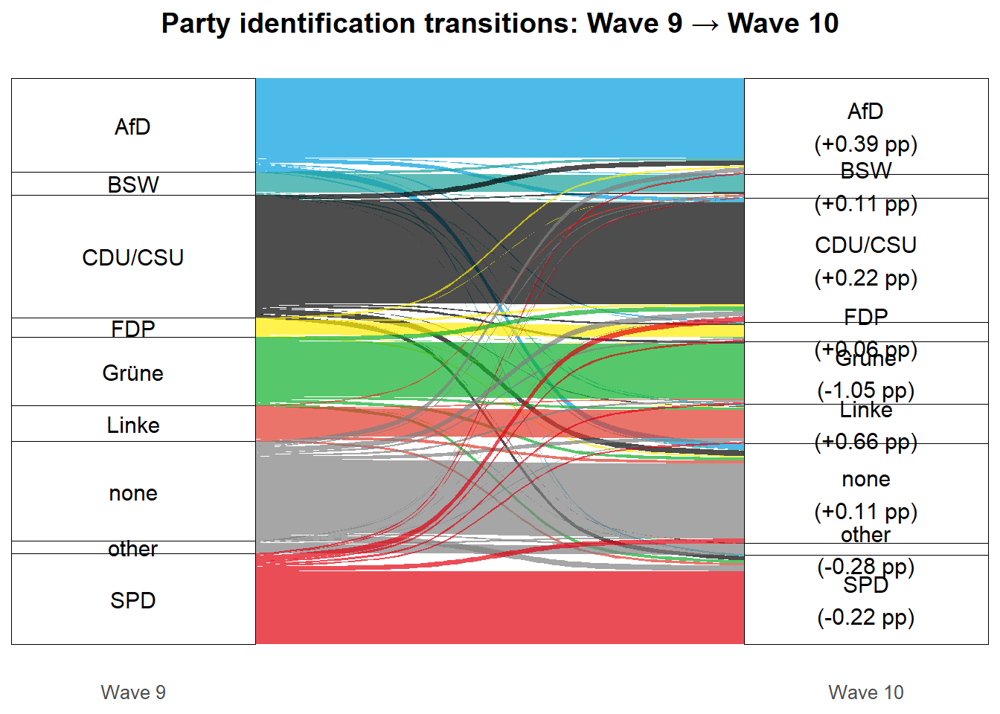
within control
pid_control <- build_pid_lodes(df_w9_w10 |> filter(workshop == 0))
fig_pid_change_control <- plot_pid_alluvial(
lodes = pid_control$lodes,
party_cols = pid_control$party_cols,
title_text = "Party identification transitions: Wave 9 \u2192 Wave 10"
)
write_fig(
stem = "fig_pid_change_control",
estimates = pid_control,
plot = fig_pid_change_control
)Saving 7 x 5 in imageWarning in setup_data(...): Some differentiation aesthetics vary within alluvia, and will be diffused by their first value.
Consider using `geom_flow()` instead.
Warning in setup_data(...): Some differentiation aesthetics vary within alluvia, and will be diffused by their first value.
Consider using `geom_flow()` instead.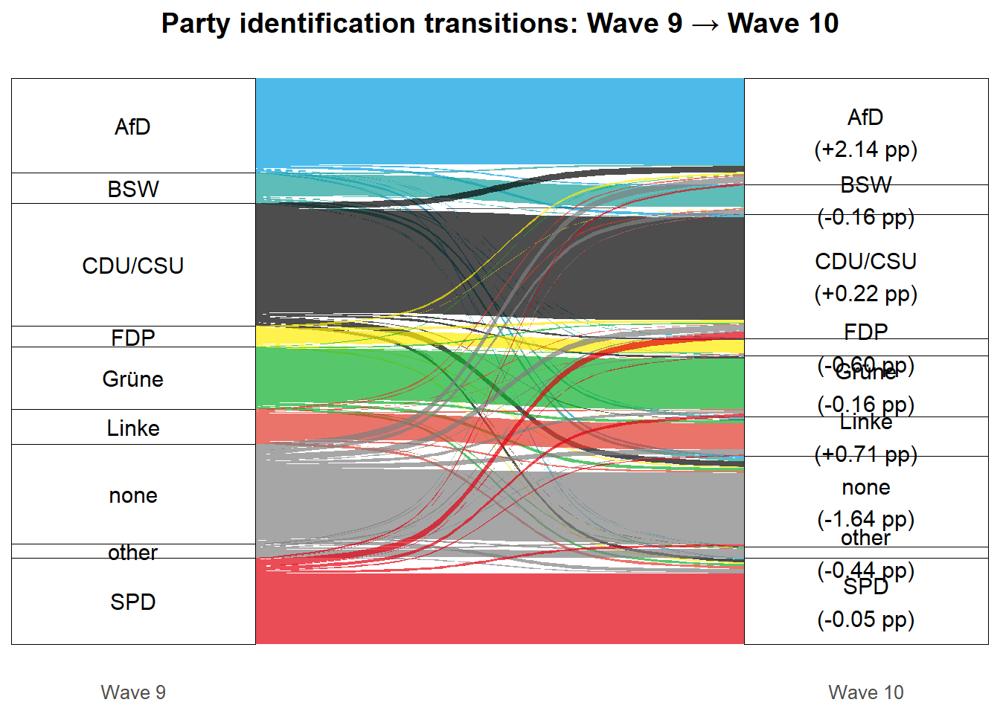
Appendix L: Correlations between short term and long term outcomes
Correlation structure among outcomes by treatment and wave. Ellipses indicate sign and strength; red/blue color encodes sign.
# Compute correlations for both waves (within wave, by treatment)
cor_w9 <- build_cor_df(datasets$wave_9, "Short-term")
cor_w10 <- build_cor_df(datasets$wave_10, "Long-term")
cor_long <- bind_rows(cor_w9, cor_w10) |>
mutate(sign = ifelse(r >= 0, "positive", "negative"))
# Prepare indices for grid positions
var_levels <- names(v_outcomes)
cor_long <- cor_long |>
mutate(
x_idx = match(var2, var_levels),
y_idx = match(var1, var_levels)
)
# Upper triangle: filled ellipses inside cells, scaled to avoid overlap
scale_in_cell <- 0.42
ellipse_upper <- cor_long |>
filter(y_idx < x_idx) |>
group_by(wave, treat, var1, var2, r, x_idx, y_idx, sign) |>
do({
rr <- .$r[1]
S <- matrix(c(1, rr, rr, 1), nrow = 2)
e <- as.data.frame(ellipse::ellipse(S, centre = c(0, 0), level = 0.68, npoints = 80))
# normalize to unit box then scale to cell fraction
maxabs <- max(max(abs(e$x)), max(abs(e$y)), 1e-9)
e$x <- (e$x / maxabs) * scale_in_cell + .$x_idx[1]
e$y <- (e$y / maxabs) * scale_in_cell + .$y_idx[1]
e$wave <- .$wave[1]
e$treat <- .$treat[1]
e$var1 <- .$var1[1]
e$var2 <- .$var2[1]
e$sign <- .$sign[1]
e$r <- rr
e
}) |>
ungroup()
# Lower triangle: numeric labels
label_lower <- cor_long |>
filter(y_idx > x_idx) |>
mutate(label = sprintf("%.2f", r))
# Diagonal: blanks (or could set to 1.00 if desired)
p_cor <- ggplot() +
geom_polygon(
data = ellipse_upper,
aes(x = x, y = y, group = interaction(wave, treat, var1, var2), fill = sign),
color = NA, alpha = 0.75
) +
geom_text(
data = label_lower,
aes(x = x_idx, y = y_idx, label = label, color = sign),
size = 3
) +
scale_fill_manual(values = c(positive = "#d73027", negative = "#4575b4"), name = "Sign") +
scale_color_manual(values = c(positive = "#d73027", negative = "#4575b4"), guide = "none") +
scale_x_continuous(breaks = seq_along(var_levels), labels = var_levels, expand = expansion(mult = 0.05)) +
scale_y_continuous(breaks = seq_along(var_levels), labels = var_levels, expand = expansion(mult = 0.05)) +
coord_fixed() +
labs(x = NULL, y = NULL) +
theme_tiktok() +
theme(
panel.grid = element_blank(),
axis.text.x = element_text(angle = 90, vjust = 0.5, hjust = 1)
) +
facet_grid(rows = vars(treat), cols = vars(wave))
write_fig(
stem = "correlation_ellipses",
estimates = cor_long,
plot = p_cor,
width = 9,
height = 7
)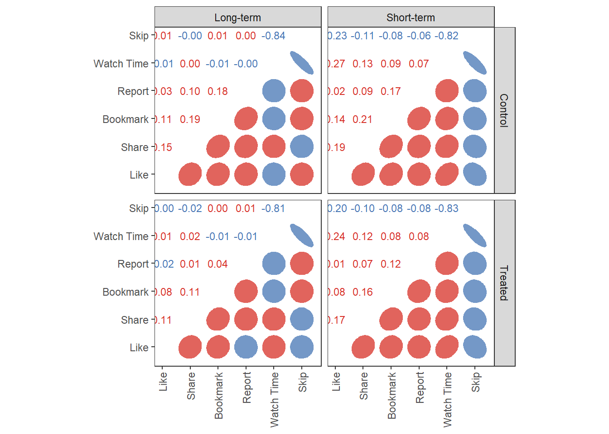
Comment classification
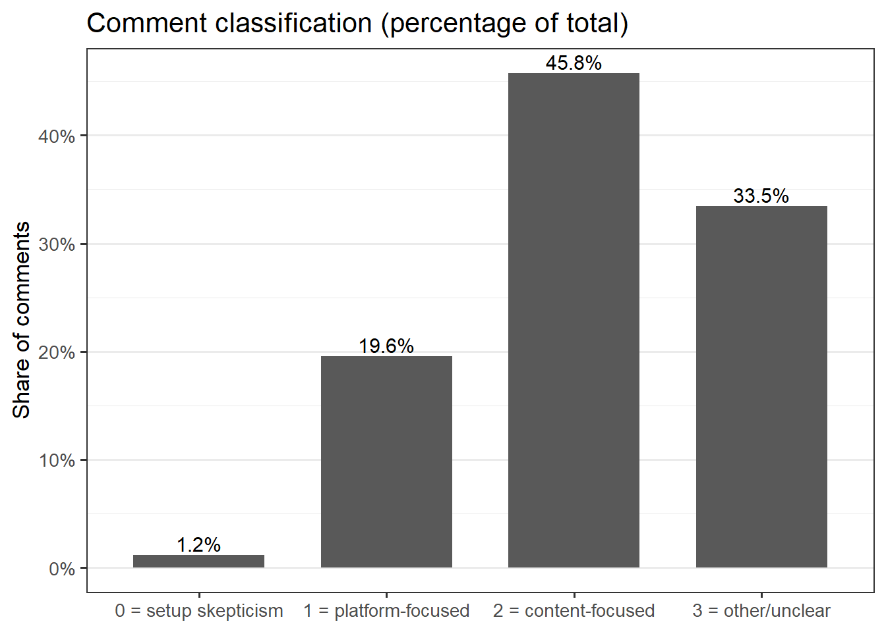